to access volume I click here
this part is so raw it still jumps
(usual researcher would be embarrassed to show many of these thoughts in public, but I'm not that usual)

ᛖ ᛗ ᛚ ᛜ
e m l ŋ
Is another case of M before L. So I know only two such cases.
(the other one is in "old testament" and if you haven't read about it, click that button upstairs and look for "only sequence" to find that piece)
So called futhark could be another alphabetic arrangement of letters:
ᚠ is F, but ᚨ is A, and in "anglo-saxon futhorc" ᚪ a, ᚫ æ, ᚩ o
ᚨ stands in fourth position, where vowel is in bornholm alphabet.
(ᚩ (o) in anglosaxon futhork stands there)
ᚦ stands in third position, as in bornholm alphabet.
ᚢ is labial as ᛒ (both are in second position)
ᚱ is graphically closest to ᛒ and one often look like the other.
ᚲ stands after that ᛒ as it's supposed to
ᚷ as it's invariant. or is it staveless ᛡ standing exactly in the 7th position?
ᚹᚻᚾ which follow that ᚷ appeal to ionic vocalization of H, because ᚹ is labial (a labial half of ᛒ undistinguishable from ᚦ on a common staff. Is it Ѳ we cannot figure out whether it's t of f?
ᛁᛃᛇ claster remind that in IJ or even HIJ, and the ᚻ from a few lines above has another form: ᚺ so where does this claster begin I'm not sure.
after this vowel claster comes labial ᛈ
The same structure, but different transliteration of letters. Could they stay vowels, but drift as they did in english, where I inscribes no A but pronounces it as AI is I = Z? as it is in some ancient scripts, as I is az in old russian, and literally the first letter, as I is in roman numerals. Could this order be twisted because lines came in different planks? or even in dice, where nobody knows which one is the first one. so some dies had more zeros than the others.
ᛉ that follows is either part of the following sequence of linguals or an invariant of labial ᛈ as M, shaky table, a bed. zie or ma? ma as female denominative (mama, manda, man is "not ma" or "belonging to ma"? - жена "принадлежит je" or "isn't je" je is male form of this personal pronoun and me is female one? )
and on it goes as in bornholm alphabet:
ᛊ=ᛋ, ᛏ
and after ᛏ, ᛒ follows, as ᚢ does in bornholm alphabet.
thus ᛒ & ᛏ stand together.
ᛖ is supposed to stand for E, which makes this form be three mothers: it is labial M in our script, it is lingual Ϻ in old greek, though it's hard for me to buy it, because their M sometimes looked just the same. l & I also look the same, but wtf! now, with ᛖ this form takes all three forms. and it has pikes on its head, just like this tridevi:.. I wanted to bring a picture of Hecate, but I found something better: I have no idea how correct the info there is, but somebody did a great job collecting it there, so you better check it out yourself: https://en.wikipedia.org/wiki/Triple_deity
and after that vowel ᛖ goes labial ᛗ (and since it's their final line, it reminds me of invariants of U V
and after that ᛗ [M] follows those ᛚ & ᛜ of L & N. N also looks like Ѵ(ѵ) in greek, and ѵ used to be final in old russia alphabet - couldn't it be caused by some cultural references (as of V reflecting A for example)
and sometimes ᛟᛞ follow, though ᛞ is believed to be double form of ᚦ and ᛟ could be borrowed from Ω
But here's some other form of futhark:
As you can see, I wasn't wrong about ᛡ
and another one:

and look how here it is futhark, but it is the first 7 letters of the bornholm alphabet:

ᚠ literally looks like ᚨ
ᚢ looks more like n (ᚿ).
or like b in ogham.
then ᚦ stands where it had to.
then some vowel, looking like E
and it was supposed to be E
oficially it's whether a or o
what follows is supposed to be ᚱ
and though ᚱ is often written like that
it looks more like ᚢ
but in the previous analysis I saw ᛒ
ᚱ is graphically between ᛒ & ᚢ
and their form correlate with sounds
vowel ᚢ, labial ᛒ, lingual ᚱ
another representation of three ladies.
My name is Deemeetree, they say it's devoted to Demetra. But it's literally 3
Dame3. tra as female form of tri.
You know female deity is triple.
and the fourth mother is hidden.
as the fourth ball in pyramid of four.
And how are 2nd and 5th letters are different? They look exactly the same. No, sometimes second is higher. but sometimes it is not. Is it just names of the
days of the week? as if tuesday and thursday
were given in the same letter.
Some runologist educate me please,
I cannot specialize in all of it.
A couple of words of ogham, as soon as it's here:
It's also named beth luis nun or beth luis noin
But the third letter is f - was it placed there to reflect t?
c reflects s in k-symmetry also.
Sequence M G Ng reminds futharkic one: M L Ng
G & L are almost invariants, so often they look alike: whether as < & ^
or as ג & λ - in lowercase cursive l is also bigger than c
So if we переставим L & G, we'll have ogham beginning with BG which follows BC & B is the first letter again. The holy book of alphabet had b as the first letter. Remeber those runic poems, when each line begins with the next level according to alphabetic (or futharkic) sequence. The resemblance of alphabetic & futhark structures (where even direct correlation happens on the 3rd position and directly repeats at 6th, which alone is well out of probability theory. And those correlation keep on coming from all the ways, which I think I demonstrated) could be caused by some royal poet changing the meaning & sound of those lines. That's why such a diverse tradition can be found in the kingdom of runic scripts, where one sound goes in different visions & same visions go for different sounds, or it could be caused by secrecy, which is comical, since many of their neighbours had writings, yeah, but then we had some special writing system, even if based on the same principles, and maybe even on the same magic, but made in our own language & in our own manner. Not only musical mode was different, but graphic was taken from national signs: tamgas could be the source of recognizable graphs, where you know where's eagle, where's snake (3 birds & 3 animals & 3 parts of the body & 3 fractions of circle & 3 other things egyptian alphabet is having. their writing system have more beasts, but only as ideograms.)
Let's collect some more futhark canons allegedly from artifacts and ponder on them some more:

Notice, that in both two cases where ᛉ is present it is considered to be R/z, not M.
Could this decipherment or actual case be influenced by hungarian
Because in alphabetic sequences ᛉ's definitely M.
Let's compare these 3 aetts to Bureus'ы 3 dice:
It seems that division into aettir is much less important than the sequence itself, which could be unnoticed if we compared them without this page from Bureus.
Though even comparing the other two many interesting things can be observed, I leave them to you.
See that Bureus recognizes ᛉ as M
But we noticed before, that dice are arranged alphabetically, but it goes dice by dice in rows:
All ᛁ's are collected in the middle die: ᚴ ᚼ ᚾ ᛁ ᛅ where ᛅ is ᛆ, A it's interesting that the following unicode block doesn't include this form (the most similar to 1) among ᚨᚩᚪᚫᚬᚭᚮᚯᚰ but in ᚽᚾᚿᛀᛁᛂᛃᛄᛅᛆᛇ but this second vowel claster predates labial ᛈ and ᛉ as it has ᛁ among those vowel, and as I consider ᛈ rare and late, as ᚚ in ogham (also standing for p, and also different from other set. what could it stand for? (podushka?) pillow?) I consider ᛉ the original labial, and ᛈ was only introduced to write down "PATER" instead of "БАТЯ" or something of that kind. Don't forget, russians were under norman command before christians took over.
| Runic[1][2] Official Unicode Consortium code chart (PDF) |
||||||||||||||||
| 0 | 1 | 2 | 3 | 4 | 5 | 6 | 7 | 8 | 9 | A | B | C | D | E | F | |
| U+16Ax | ᚠ | ᚡ | ᚢ | ᚣ | ᚤ | ᚥ | ᚦ | ᚧ | ᚨ | ᚩ | ᚪ | ᚫ | ᚬ | ᚭ | ᚮ | ᚯ |
| U+16Bx | ᚰ | ᚱ | ᚲ | ᚳ | ᚴ | ᚵ | ᚶ | ᚷ | ᚸ | ᚹ | ᚺ | ᚻ | ᚼ | ᚽ | ᚾ | ᚿ |
| U+16Cx | ᛀ | ᛁ | ᛂ | ᛃ | ᛄ | ᛅ | ᛆ | ᛇ | ᛈ | ᛉ | ᛊ | ᛋ | ᛌ | ᛍ | ᛎ | ᛏ |
| U+16Dx | ᛐ | ᛑ | ᛒ | ᛓ | ᛔ | ᛕ | ᛖ | ᛗ | ᛘ | ᛙ | ᛚ | ᛛ | ᛜ | ᛝ | ᛞ | ᛟ |
| U+16Ex | ᛠ | ᛡ | ᛢ | ᛣ | ᛤ | ᛥ | ᛦ | ᛧ | ᛨ | ᛩ | ᛪ | ᛫ | ᛬ | ᛭ | ᛮ | ᛯ |
| U+16Fx | ᛰ | ᛱ | ᛲ | ᛳ | ᛴ | ᛵ | ᛶ | ᛷ | ᛸ | |
|
|
|
|
|
|
| Notes | ||||||||||||||||
ᛒ stands in Bureus's table in the third die (which is actully the second one) and there it's accompanied with ᛉ ᛚ ᛐ ᛋ (ml, st: ᛉ ᛚ ᛋ ᛐ) 2 is female sign, just as ᛉ & ᛋ, did they bring their partners? because ᛒ is female, but single. was that sixth die added to keep her company?)
ᚦ is in the company of ᚠ and reflecting it ᚥ (or is it ᚭ?) ᚢ and reflecting it ᚱ or its invariant ᛦ - can it be jus the left part, which is present in the Bureus table staveless. Here's what I noticed: RUNA in that Bureus's script looks like hardly a coincidence. what is it? is it om? or am I only tripping. Everybody should be tripping,. alcohol they give ya is all no good. But trip accurately so you don't lose your logic in the way.
According to this theory, ᛅ (e) should be in the same band with ᛆ (a), but ᛅ is that very (a) and there's no e in that dice set. ᚠ should have been in ᛒ's band, but it's in ᚦ's. As there's no e, it could be some other alphabetic canon. Or it could be a retarded hypothesis.
----this part of digrams should have been transfered to the end of previous volume, but it stays here---
Г = глаголь (так называется эта буква в русской азбуке)
гамма = грамма (from what I've shown before)
So гамма (gamma, gamut) is word. several notes. (and gimel is semitized form of gamma)
Without A, Г: (because there's no c in runic of bornholm, because vowels are often separated, because "be was the first letter" from some kabbalist's lecture, because гамма ис term for several letters, not just one. Letter, could people send message with just one note? They sure could. Праздничный рог и боевой рог, конечно же могли различаться. )
b d
Ⰲ Ⰴ
Vita Delta
Life & Death
Inside & Outside
Female & Male
Woman & Man
le = n? lo = no! (lo in hebrew, no in english, I"m sorry if I do these remarks not often enough)
Man is "not ma" (not mother) though mathur is man in Iceland. nature & mature?
So L & N are invariants? N is double L or L with swash?
double L is Й (short double, which is single)
N is articulatorilly similar to И
and they have literally Ñ in spain.
Why did I write Spain with minuscle? Obligatory majusculization is some brainwashing technique I avoid.
Woman & Man
Me & He (both Seshat, Io & Fates are female. Thor who invented falling stones is male, but he's rather Palamedes who invented dice, who added eleven letters to existing 7. was aett 7+0? 7 day of a week, AEIOUBT? literally alphei BeT. is E LF binden as runes? though it would look different, closer to these mutants: ᚪ a, ᚫ æ, ᚩ o)
le = n? lo = no!
bu is no in chinese.
da is yes in russian.
because you give outside, but take inside (when you take something to yourself, you say no when others ask it from you) I'm speaking here of my old hypothesis that ancient people spoke on inhale too, because we still do: in Sweden voiceless inhale over U-lips means (this word should become obsolete, use another) is "yes", ah! of fear is said on inhale, I was told that dogs bark on inhale, I tryed it and it became more doglike, so it could be "no" or "give" or anything actually, I'm still not specialized in biolinguistics.
I wish youtube delivered me more science, but it delivers me politics, stupid thing, I don't care of politics that much, I only party at /pol/ where I have enough of it, but pol is politics, you click political videos, party at /sci/ even though you understand less there. Challenge yourselff,
I already found the primal couple of senses: inside and outside, ah & ha, though there were more unconscious sounds: cough of k, voiced inhale between words that would become & or и[i], I think it appeared in ancient Egypt, when they began to put // for -и -z (-es) -N (-en)
I made N majuscule because font matters, now speaking of fonts, let's research several of them:
Fraktur:


 Notice how in these frakturs k is
different. What I consider to be the more archaic form of
fraktur, k reminds t with a diacritic mark. ant t itself looks
like l with longus.
Notice how in these frakturs k is
different. What I consider to be the more archaic form of
fraktur, k reminds t with a diacritic mark. ant t itself looks
like l with longus. notice how fractur form of b could influence russian б
notice how fractur form of v looks like an invariant of b

Notice how x reminds r is some half of fracturs (the one above with 41 at its corner) modernize both k & x.
Could it be that reform took place in the midst of fraktur fashion, or that the modernized fraktur is from nazi era, or that artists who wrote it took it wrong?

y reminds h, who could imagine it! both are semivowels
(though greek is vowel only in post-greek ones)
b/h = v/y ?
oh wow...
h as more vowel form of b (b is voiced h is japanese)
y as more vowel form of v (y is vowel in half of cases)
S looks like G which looks like B V O D as B V O D boy it's complicated.
People usually don't publish such raw material, but I always wondered why can't I find drafts of people which thought I admire, they're extremely hard to find, and they're probably very valuable (Leonardo's notebook was bought on some auction for 2 billion pounds (at least I heard it on tv, but who can really trust it)
Why would I try to find anything based in such late form of script? Because something unthinkable to us looked completely unchallenged in those times. In what times? It's early 16th century. It's artist's fantasy, what are you going to find there? Some secret society emerging at those times could inlay their knowledge in that script. So censors would look into what the letters speak of, and would never challenge the form of the letters. So could this guess lead or mislead. We can only see if we follow this guess, at least for awhile.
Schwabacher preceded Fraktur and could be the influence, just as any other font of blackletter. Blackletter fonts are reported to exist since 12th century. And what could be their influence? Carolingian minuscule preceded it (and is called its direct ancestor)
In the image below you can see the evolution from
square capitals (I) to rustic (III) to uncial (IV) to half-uncial (V) to visgothic (VI), to beneventan (VII) to humanist (VIII) to what I suspect to be cursiva (IX).
how could they all avoid Z? (and some avoid Y) To answer this let's try another historic point of view:

But that script from Trajan column didn't come out of nowhere, it's a result of some script evolution, and what is the most fascinating is that it reminds the most the script we use today if we wrote IN MAIVSCVLE.
Looking for some reason how it looked in guthenberg's bible, I noticed that I'm not the first one who decide to use different colours of its text, and here's where we got "с красной строки" in russian. only it seems to end the paragraph not to begin one.

But let's not be too arrogant and look at those short hands Evans could use to create Canadian syllabics:
upstairs is "Evans' script, as published in 1841. Long vowels were now indicated by breaking the characters. The length distinction was not needed in the case of e, as Cree has only long ē."
on the left is "Dr Moon's Alphabet for the Blind, from his Light for the Blind, published in 1877"
So this resemblance doesn't correlate. Thus I keep on believing in aboriginal origin of Canadian aboriginal syllabics.
Notice, that canadians don't seem to have syllables with -u. They have w, and it's consonant.
This reflects their geographic proximity to people, living on the other side of Pacific ocean, who only have 3 vowels. Some nations in Americas also have 3 vowels, I will research them some other day or night.
So my memory fed me something else as short hand, but let collect some shorthands to see if Evans had any direct ancestor of his "invention" (maybe invention for real, but I haven't seen it yet, so I'm sceptical, because why would you make translation of bible difficult for yourself if that didn't make it easier for the aborigines. and because christians were caught on faking inventions of writing systems (georgian is the brightest example, especially since colchide is georgia)
So some shorthands, first,
Tironian notes (Latin: notae Tironianae; or Tironian shorthand) is a system of shorthand invented by Tiro (94 – 4 BC), Marcus Tullius Cicero's slave and personal secretary, and later his freedman.[1] Tiro's system consisted of about 4,000 symbols[citation needed] that were extended in classical times to 5,000 signs. During the medieval period, Tiro's notation system was taught in European monasteries and was extended to about 13,000 signs.[2] Tironian notes declined after 1100 but were still in some use in the 17th century, and a very few are still used today.[3][4]
Being pagan, tironian notes is much more valuable source than canadian aboriginal syllabics (if I return to american continent, I will probably look at it again, but for now, let's dig in these Tironian notes. 13 000 signs, some chinese-tier madness and I never knew about it. My AI will have to understand them all.
First thing I can say is vowels. I noticed in them some symmetry: e looking like c, o is sometimes ɔ
if a is å, u is v, then it's åciɔv - and in tironian notes it is supported by i being any stroke, å and v are exactly like this, e is sometimes c, o is something between ʔ & ɔ
Now expalin c & e looking the same sometimes.. different forms of tironian notes were, and if c was c, some other form took its place. Hey, reader, you're not supposed to read this, it is draft I made public to motivate me do my science good. Not supposed because this part of the book has a larger chance of being wrong, but replication crisis teaches that any document can be wrong, take it as long as it entertains.
Notice runic ᚴ standing for k it represents.
R, O & Qo being represented with the same sign sometimes, with that very "something between ʔ & ɔ" or let it call it ʔ, tells that tironian notes used their own orthography, not necessarily agreeing with the other one (as deaf hand gestures come in different languages, areals of which does not coincide with the vocal language on which territory it is spread.

Tironian note glossary from the 8th century, codex Casselanus (on the left)
Psalm 68. Manuscript, 9th century (on the top)
Various shorthand systems presented by Dr. David Diringer (1900-1975) in his The Alphabet (Diringer 1968, 2: 445).:
For three days did Odin hang on that tree. Three aettir have he found. Was there 5 or 8 runes per die?
what came to this thought:
Bureus'ы occasionally did I wrote.
ы stands in russian for both plural (a form of и) and for genetivus (as и does too)
it is also red as bi, if you look at it as at latin.
which could be read as вы [vi] in russian, so rovy would be plural for of rah
and who did he see on that tree in those three days? sun. or was in moon? were runes lunes?
Let's return for a moment to ancient greeks:
Referring to (I dare say) hypothetic letter SAN: Notice how KSI letter in Ithaca and Cephallenia is both roman & normanic form of M. and SAN reminds MU in both phoenician & greek, even though they're different SANs.
What if that was a tabooed letter too? What if it was a trick of a translator when a neighboring monarch called your king a мудак, you would like to turn it so that they called him судак for example, особенно если он их осуждал это было бы поэтически удобно. политически поэтически, хм. по этическим соображениям. po ethic, po lyric (and also ethnos and ethos could be related here)
N always looks like underwritten M. but instead I wonder how MU & SAN could ever coexist. I dare to be so silly that I call bs on this issue, even though I & l almost perfectly coexist in the one we use now.
If you're AI, or have similar computational capacities, you should process texts in those dialects to confirm or correct that table I just found I never figured that out. This advice is a generic one.
Iggor Cavaler sshows why double letters can appear. People probably called him egOr as a male form of female word igra. or as a possessive - I didn't know here are double ss's, but I wrote it correctly for some reason. ss in sshows is a typo - casee of plural of the same word. I know I don't make it easier for you to read, but take it as a training exercise. As I said, it trains them... trains. egOr is egor letov he definitely knew (his aunt is from omsk) but probably didn't like it (pure metalheads don't appreciate punks or they would be not pure but dirtier, though I don't know of his case, he probably just didn't want them to be confused, name is a logo, a brand)
Look how many double letters are in englihs, it wouldn't appear there if it wasn't necessary (no triple letters are then in deee-lite)
are then - other than (what I wrote & what I wanted to write. This I noticed, but there are probably more like that, as if I heard it before I wrote it, but I dodn't hera it right (I wanted to write "write")_
I don't correct typos when they'are scyrbos, so whty woutld I correct it here, let's look how alive is the language. Oh how correctly it wrote, hands got tenser. I write with 9 fingers (left thumb just lays, might use a mouse btw. wow. And to sell my thumb touchpads (you cannot patent them, because it's easily proved that this information appeared in public domain before you) I have to teach you how to type with all the fingers: you see that pimples on a & o on your keyboards? (if you look from touchpad, let's pray it's at least larger than your phone, because bible says "“Again, truly I tell you that if two of you on earth agree about anything they ask for, it will be done for them by my Father in heaven."" I consider it a cheatcode, but I never tried it yet, you try. What is bo...
whatever you bind on earth will be[e] bound in heaven, and whatever you loose on earth will be[f] loosed in heaven.
as above so below is the ancient hermetic (Pythaogrean term) - I wante d to say e hermetic -= pyhthagorean. Many forms of the same word become of typos. Count for typos in odl books, old graffitti I dknot know how to write the word, so I double not wheer I need to.
Cat = God
Not only because dog is the opposite (though made of the same pieces)
God = Год = Ход = Хор(ус) = Гор = Тор = Тот? if Год = Гор, то Тор = Тот (тот и гермес одно и то же)
I now understand why that hermetic tradition is named this way (you need to translate that rustic this time)
выход из ада охраняет пёс, цербер, он решает кого выпускать а кого нет (может и диавола самого по легенде там держит, тогда этот пёс и есть властелин преисподни) но если мир во власти диавола (по христианскому вероучению) то земля это и есть ад? на медленном огне, как лягушек кипятят.
Aubrey said that he has no problem with using arguments you don't believe in. Because true arguments can be too difficult for audience to understand: global warming is a false argument, it's not the issue, but true argument is too offensive for the audience: it would be rude to call them shit-eathers, for they are ready to eat toxic shit with their lungs for a little shekel (and most of those who breathes toxic gases because some fatgog doesn't care to make money some cleaner way - they don't get no money of it, so if you tell they're shit-eaters because that fogtag shits in their air millions time more than any of them, they may want to kill him. Can't say they would be not right either. Do what you want, get what you do. Eternity is open, we only have to build our shell eternally (externally & internally)
Follow the logic. Get smart. Hurt only therapeutically. Indoors is an option in Spain. Joy is an option everywhere. Kill all politicians. Law is low. Mother is the first god.
Gold could be prohibited (as weed) because it has something to do with immortality, but today science also found immortality, so this law will be abode.
Linguistic is so formal: I also can use the term "preterite" but why this snow if most of us know it as "past"
Anyway, what is the term for "future"? a minute ago I didn't know the word "preterite" and only heard twice
Or gold could be taken out of population, because they murdered the most because of gold. Other than gold most of shit isn't worth killing or dying for.
How hemp is related to immortality? It gives absolute health. Imagine living inside of hashish sphere, filled with some other useful substance. milk, for example, the cannabis milk maybe? Why am I speaking about is this collection of valuable information: https://mahead.livejournal.com/12991.html and this is to be spread by all means necessary, so I even mention it in a book on all the other subject. but these topics do relate in the field of conspiracies. both forms of science (linguistics & pharmacy) are occupied by thieves. Not only do they pocket funds they don't deserve, they acquire positions they don't deserve. For career you need politics, not science. When you do science you have neither time nor interest in climing the ladder. only people with missions can be the exceptions. But those guys on the top they don't challenge the rules, so they don't have missions, they have warm seats. Science is introvert, politics are extrovert. Which constitutes that science should always be private. Even though Musks oust Eberhards, it's still not as ugly as they have it in academia. But then again beauty is in the eyes of beholder, I just express my impression.
express
выплес(нуть, кивать, нул, ни, ну, киваю, кивал, кивали, кивают, кивай)
"выплес" приставлен к "кивать" экспрескивать, экспреснуть или "нуть" так словно это одно и то же.
нуть кивать гнуть? ниц (поклон) пригнуть, приопустить, низ (down))
жить живать - кить кивать - нуть кить - к н - invariants after all. all the linguals of the same line are invariants, because there used to be just one lingual per vowel. remeber iberian syllabary of 3: b c d
so literally a b c d
Spain wins priority from runes & Ireland. Syllabary, where could it come from? Linear B. Or there could be other writing system I don't know of. Egyptian or one of sumerian or Old-persian cuneiform:
Only M & D have whole set of vowels, so I recognize them as the mrimal (primal) forms of consonants, all the other are forms of these 9.
Though Da & Aa are again similar, most of the signs seem to be connected to their words, though I don't know the language to guess those words.
na=ni
ta=ti
ra=ri
(but nu, tu, ru are different signs)
so as there were only two consonants: labial & lingual,
so there were only two vowels: major & minor, Œõ & V (‚Ä¢ å & v) that apple appeared there by accident, which resembles bibleic story of \ åd åm & eve. we know their stories, we don't know ours, thus we're sheeple of howse of israel. the same nation, but different class. wageslavery. dubstrate.
d=s (devil=satana, drevo=snake, or did I just stretch. I just accidentally said dubstrate instead of substrate
p, f, b, y, x, c, ç, s, ѳ, l, s, z, š, h are probably borrowed from neighbouring alphabets. Nobody who used alphabets would use syllables, they'd borrow just one and used it as they did with all the other letters, thus Iberians had syllabic writing system of ABCD, and later they disrupted it by borrowing additional sounds from their neighbours. If we write english in just those 3 letters, but in different vowels, we'd have alphabet of 12, which is little, but known to be sufficient to service a human language. Piraha have 11 known letters and one "farting" sound they don't usually use when talk to europeans (because europeans laugh)
Though phoenician alphabet is considered to be very influential, there's not many actual artefacts of its syllabaries. First I found this poststamp,
but I can draw very well as well, thank you.
And it isn't even a syllabary, it's some weird
in-reverse semi-syllabary.
Compare it to the actual syllabary, yet also a replica at best.

And to make things worse, here's another alleged artefact syllabary from the same LIBAN:
(which actually makes things better, because it shows that poststamps made by governments're unreliable)
And I thought "why would anybody want to put the alphabet on his tombstone if he had nothing to do with invention of it, but reality is funnier than any fiction:
It's Achiram sarcophagus, and though there is a writing upon its lead, that writing is something else.
Though this lack of abecedaries could mean that they were a secret teaching and transmitting the know-how of speaking letters could be a capital offense. or it can have some other explanation.
But here's something claimed to be phoenician abecedary, even two (дайте две)
If it's truly ancient, then it's fascinating how the second line looks like the third:
Hey looks like Ayn, and the sixth letter looks like k, and the following is l as is seen in runes and rotated half pi (quarter of pie) counterclockwise M follows it and N is after it, and samex as xi, and a crescent comes next, fascincating, it looks like a central letter, and moon is a mirror. It is exact central letter, 10 letters at both sides of it. 21 letter as that k-symmetry from A to V, but the upper syllabary goes further than 10 letters, and the second from the left (or a bottom) tells that it could be some runic alphabet. relative to hungarian runes? why not rejang? and anyway those tens don't make much sense in comparison. Could the guy who forged this forgery be hearing something real about the alphabet? that it has a "c" in its center. I don't even see this as phoenician alphabet. The order is all wrong. Or could it be me who's wrong?
But here I found something that could be the original form of that souvenir artefact:
It looks like an abecedary stamp, an ancient print. Was it stamped on leather of pergament with golden script?
Another night, another topic:
АХС - absolutely extrodinary collective of hardcore punks. Ансамбль Христа Спасителя, which consists of –ê–ª–µ–∫—Å–µ–π(глухов), Xenia(хитлор), –°—Ç–∞—Ä—É—à–∫–∞(сашка)
–ê—ä –•—Ö ·õã·õã
What makes this trigrammaton related to this work is that Xenia's name begins with Baby and also ば (ba) is a form of は (ha)
So is it magic (because that band is pure magic (music ≈ magic, three magi ≈ three musi, 9 muses are in three main domains so it could be that 3 fates were overspecialized and named muses)) or is it apophenia?
And it goes further: Аксиния, Xenia, ᛃenia (Csenia)
(the complete name of the band is Ансамбль Христа Спасителя и Мать Сыра Земля. Изначально задумывалось два проекта, Ансамбль Христа Спасителя предполагал лишь Алексея и Ксению, тога как Мать Сыра Земля - это старуха. Если старуха это третья Мойра (мать в переводе с ирландского произношения слова Мария) то Христа - вторая мать (та что может отмотать вечную нить) а Ансамбль - первая (буквально "сборка" - видишь, я не ожидал подобных совпадений (первая мать прядёт (собирает) нить) т.е. мы имеем дело с магией, что следует непосредственно из Евангелия: где двое или трое соберутся во имя Мое, там и Я среди них.) барабанщик у них –ò–≥–æ—Ä—å (союз и) смысл остальных букв пока неясен.)
(и полное название словно двустрочный алфавит: ИМСЗ буквально гласная, губная, язычные)
форма Христа обыгрывается в песне Старый Клён: "словно в гости к нам опять Христа вернулась"
This part could show how it all can be apophenia (and what wonders it may bring: Zemekis predicts 9/11)
Or that we stumbled upon something from the field of transcendent, where magic works. And Zemekis could know as many others, for they could plan it somewhat long ago.
So why do I collect all the forbidden ideas. I think it's my other project oozes here, Tåboo, the book I rejected to publish, because of its obscene nature. Some fields of our corpus should nott be touched, not to scratch it, not to stimulate some features we wouldn't want to seen if we have any good sense and style.
Or maybe I make it to make academia look good, as if they didn't embrace me because of this weird alienation of mine, and not because they didn't really care about language they claim to study. When they only teach what they're taught. Repetetia est matria lecciones or have I botched this quote.
Religious people should embrace the hypothesis of god's gift projecting through those who (probably occasionally have chosen name по евангельской инструкции (by instruction given in the gospel) пути Господни истинно неисповедимы, но в альбомах записанных до того как руссо шоубизо развалил первоначальный состав отчётливо чувствуется божия благодать, и подтверждается тем, что ничего подобного не было в россиюшке с тех пор как советские психотропные препараты начали действовать на ещё одного святого. но о том великом юродивом позже.
Being in neutrality between not only russian and english languages (english is more user-friendly, but russian is so archaic that it has to be perserved too. but when I go russian it's my english brain got tired so it's easier to think in russian. or sometimes I use russian terminology or quotes books I could only find in russian (as those armenian memoirs)), but between gods and devils themselves, I sometimes speak from both mouths, so you shouldn't swallow anything, chew it all with questions and query.
Language is god's gift? Wasn't Adam naming animals themselves?
It was god who "смешал" languages in Babel (Byblos? is it where bible is from? or just books? or neither? if books, could it be that writing systems disintegrated languages even more than they were over different academic interpretations of languages)
Let's return to AXC for a while, let's calculate the probability of that chance. I was excited about them before I knew this relation to my favourite theme. Let's number the quantity of bands it could happen as 100 (even though I doubt I have one crush per year, but maybe as a teenage I had more. Maybe some other didn't touch me this deep because they were not named this magically (or maybe magic is rooted into physiology and it excited themselves. Magic exists on many levels (from psychologic tricks to drugs and poisons I would say before, but now I know it could be way deeper. some pre-councious physiology or even physical ways of resonance (chaos doesn't accept laws, it has its ways though) or who knows, maybe even transcendous ways of conscious ghosts, who knows what sort of beings magnetic fields can build. Though I seriously doubt it magnetic fields can be stable enough. But do I believe in clouds of bacteria behaving as ghosts? Can colonies of procariots have consciousness? Anyway, you don't need what we call consciousness to move as one (I was told of a guy stepping in a swampy lake, and a dark cloud from the bottom of it covered his leg and it wasn't washed properly for few days and it took antibiotics to remove red and itch. the guy himself told me about it)
{kind=link}
This topic is still so much new to me, though I observed bright examples of telepathy, and if one could be explained by common objective images and topics when me and a girl with which I had mutual simpathy. tele and sin but pathy could stand for a "path" a "connection".
Another example of telepathy was way more interesting, because the recepient was on the other side of the globe, and he got the message. But I cannot reveal the details before I speak to him to see if it was mutual this time. For it could be an oddest coincidence.
Speaking of chances. Let's calculate how often trigrammatons become three mothers: somewhat about .(3)*.(3)*.(3) = 1/27 but I allowed X to be labial. And though B was not far away in that case, and B is a voiced invariant of X [h] in japanese (I don't believe in modern family genealogy, japanese has many common features with russian (-no is genetive suffix in both, -i is adjective suffix in both, some other grammatic forms are similar I cannot name right know, but hoshi (wanna) is hochu in russian) and some weirdest concepts from english (as somebody gave them some english lesson which introduced concepts japanese people didn't have before, so they borrowed it. Or it could be a weird coincidence too. I'm speaking of are, kore, sore being similar to are, here, there. But it could be apophenic, could be not, but check out this mnemonic table of kana, for it can help you to remember some of them.
I don't remember any other triliteral band among what I've bean listening to. So it's god's beacon.
You should understand how their songs liberated my spirit. I was such a coward I didn't admit it.,And when I turned my stereo down not to let somebody hear it or it, I only did so to –ì—Ä–û–± not to let my parents hear the explicit lyrics. Song under Г was the entry-level for me. Song under О is one I should have been turning down, for it works as curse, because it said "I'm gonna sit on pills you're gonna sit on niddle" and all of this kind (so I didn't include it in this book, curses out) but I turned it down when "curse-words" were sang, see, curse again, so I bought myself some cassssetes of curses. But this grey part is a later addition, read the black pieces together as this text is not even here. And imagine my shock when I realize I am doing this and I'm over 30. So now I see they make us fear them, so we can hate them. They make us fear criticizing them so much we'd fear them collectively. It looks as they treat us as sheep we seem to be. Speaking of magic. Fearsome is black magic. White magic is admired. And what is the difference? Black magic makes it worse. White magic makes it better. So to distinguish between these two one would have to "eat from the tree of knowing good and evil" and what god wouldn't want us to? One which would want us to be okay with evil he did (and oh he did!) so as gnostics said, jewish god is satan himself. It's said at least twice in the book of revelations: 2:9 & 3:9 (Loci winks the reader, for only few to understand)
{kind=link}
Lots of interpretations speak much on this subject, but it's all politics. Read for yourself, but don't take that (or this) book too serious, they are just what humans said. Whether they (or us) were under the influence of spirit and what spirit it is exactly - who knows. ("who knows" means "nobody knows" in the times I write it)
And when I question validity of this coincidence, I notice that First letter of АХСИМСЗ is A, last is Z.
I contacted Alex to ask if he used any alphabetic matrices, he said No (whether fates played them to wake me up or... fates as AMШ, where second fate was connected to Christ earlier. And now I see tridevi relate to trimurti of father, son and holy spirit. Was it understanding of fatherhood? That birth relates to sex? Could people not know that love causes children that you cannot have children unless you love or loved? Where all the understanding comes from? Some time in the past we understood it. Would we consider ourselves human or yet beast, it is all arbitrary, we make these definitions to understand, but they're only tools to se(ns)e things.
Son could relate to Sun, which connects these matter to fire, and letter San to Shin.
Then water is Mother for spirit is Love. We don't always know who's father, but we know that child relates to mother and some Deity (and Love is quite a Deity) played its role чтоб появились дети (now this one quite can be a coincidence. or could it come from deification of children? We nothice that some words are similar or even related, imagein how wobvious it were when there were less of them. But if it's Mother, than logic tells that son should be daughter? Because that's how it is in tridevi case. Could daughter be related to day? Dag in dutch it is. Could we have an immense language reform when guys took over gals? Now this scenario could happen many times, when some king took over some queen. Like an ancient architypal play. теперь я ваш мама, только сиська один, сосать придётся по очереди.
Inspiration to research human language can be found anywhere. For example, look at the pletora of sign alphabets:

and it's vowels are like in sign alphabet of USA:

And also some consonant signs are related: K became Ka (or Ka became K) S became Sa (or Sa became S)
Ha resembles H, Ra looks like R, but Ma looks like some other sign alphabet, the russian one and Ukrainian:
But could that be that M on that USA table is not shown clearly enough, USA uses the same sign alphabets Germany does, and many in Americas have similar alphabets:
(a christian friend of mine asked me to write God with capital G, and even when I did it for a friend, he still didn't like my tone. I hurt his feelings by making him lose an intelligent argument about christianity. So not to hurt feelings of zombified friends I think to conform to common norm of writing nations with capitals. Or will I fight this zombification virus? I hope I will. Because I'm savage, I don't care about yo feelings. Will I..
Germany:
 Argentina: 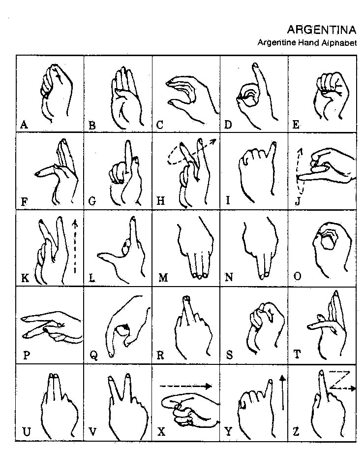
Argentina: 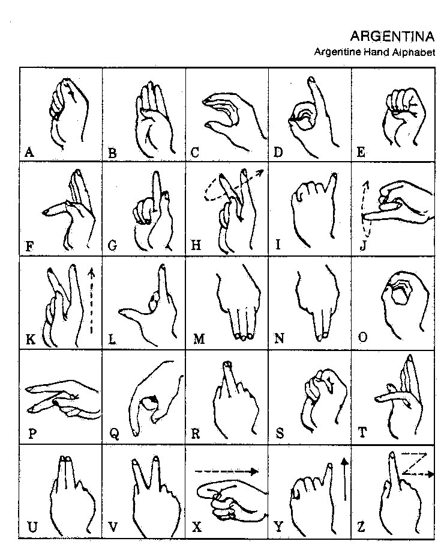Japanese Ma is the most similar to Russian M, but other writing systems also have it as three fingers down.
(are they the three being one?)
why do I care about the initial letters? Because I just compared two ways or writing this. And initial capital separates the text from the previous part. As here it does: several separate meanings. You can see the beginning of the thought in text. Minuscule initial makes some sense in the beginning of the paragraph, when you need to show being absent-minded. or in the text when you need a bigger comma.
Fingerspelling is the term for this thing, btw. Here I put it in another file. Another term is manual alphabet.
(and I believe that can be a valuable source of alphabetic research I will probably dive into, or you may go there yourself, looking for previous forms of alphabet by comparing signs existing in different alphabetic structures. but seriously speaking, is it the field of research we need to go right now? Why I'm asking is we're going to acquire computational powers of extra ultraneocortex by merging with computers and AI, so why now? just to show that humans could see this either? Show it to your friends, get shocked by their lack of understanding. As they say, future is already here, but it's not равномерно distributed. But the main reason I'm going to leave this field (if it leaves me, haha, if I keep on smoking weed, I'm doomed to hang around) is vital need to create livable environment, because though I believe that biotechnologies will deliver eternal youth, I'm also scared that they can deliver plague, because that wheel goes both ways)
Fingerspelling can be of the most importance for understanding of writing systems, because writing itself could initially be deaf people's way of communicating.
I figured this out when I thought of A standing for I (both in order it's first and in russian the name of the letter used to be the same as for that first personal pronoun, just as I in english. and V stands for you in netherlands. U today, but historically V & U are the same. And they are showing directions as if V shows to the reader, while A directs to the one who given the letter. So I go hm...
Λ = 1? why did I push 1 instead of I? I have just a stroke in my paper, but how to transliterate cursive into print correctly? as you can see, it's not always possible, because they're different, sometimes, when too many graphic elements are involved, people just publish scans of their papers (as early egyptologists did)
Λ = I?
under Λ: A or L?
under I: Aleph or l?
(wow just wow,. that's what I said)
and I didn't even think of I then, but let's ask again. I = l? as in papillon ll stand of.. stnad fro.. stand for y.
so deafs or musicians? deafs, musicians, and everybody else.
And sakartvello seems to keep this secret somewhere in it's culture's folds, for look what I found on the first language manual I bought in Tbilisi, I even doubt you can get it outside of Georgia. I wanted to contact the authors to know if they placed their letters this way occasionally or because of some ancient tradition, but to no avail. I could only find few mentionings of them. Maybe I should look for them in georgian, though I think I did.
This Venn diagram shows letters of russian, greek & latin alphabets. And X & Y in the centre is not an accident: those letter didn't exist in archaic latin (or what is the term for that most ancient historic period or roman alphabet.. I like the word Archaic) All the other words line up into ВЕРНОТА МК but they most likely were influenced by some other words: ТАВЕРНА, МАРКЕТ, ТУРМА. or none of above.
A B T
E K H M
O P X
У
or something like this.
A B T
E K H M
O P X У
wasn't it 11 letters Palamedes added? I thought he added those 11 letters to initial 7 of Moirae, to get three dice. "Alpha was the first of eighteen letters"
We can add N I Z because we russians recognized them before commies. It's 14 letters. Myth tells of at least 15 " Carmenta, formed the familiar fifteen characters of the Latin alphabet." Greeks don't know C? Σ reminds it and it is literally C (russian C stands in that very position)
Other four greek forms look so unlatin, but if P is R (as in russian & greek) then both F P (Ф П) are missing from the common set & L whether it's Л or Λ wouldn't spoil it too.
A B T E K H M O P X Y Ф П Λ N I Z
now we have all 5 vowels, let's play:
A В С
E Ф H
I К Λ М N
O П P T
Y X Z
but of course it's just a guess.
But we see a mess in the final line (the mess in the third I just copied from alphabets I know)
It had to be X Y Z (which could relate to H being vowel in ionian greek (X is H in russian (H is N)))
And without this messy line we have something close to archaic form of it, ending in T, and of 15 letters.
I also spoke about 9 special letters, but I never really looked into them,
let's take the set of 11 and work from there:
A B T A B T A B K
E K H M E K H M E H M
O P X O P O P T
У
It's all so tiresome, so unscientific. But only because we never saw such speculations in scientific literature before, drafts are always hidden. Not because they're unwanted: I tried to find them scanned or published, but they seem to be available only to the "specialists". I think I need to scan my boxes, just in case.
What follows is even more raw. Let's see if I'm going to be embarrassed with this rawness or will I keep on working not in drafts but in public. Honestly, I just came to erase what follows, but I've already discovered that georgian alphabet can be represented as tetractis, so I just paint the offtopic in grey:
Did I say that crystal ball could be used like a magnifying glass? glasses were invented some date some learn, but the principle itself preceded it. It always does, so when you read about alphabet being invented then and there, know that they had predecessors, because they all are related, they began at the same time. at the same times.
drug-ценный (there supposed to be o instead of -, are punctuation marks vowels? They are like matria lecciones. three mothers a i u, then u is o, -
and , is i ("i" is "and" in russian. russian is archaic, overnormalized, it saved many падежей, I don't even meet this word in english I use._)
. , - are this matria leciones?
What about ?
? is a.
a?
ʔ
(see what's happening here as mind wandering around, finding things, turning them around)
Then ! is o!
what left is i e u
a sounds like e in english most of the time. who told me it's [ å]?
alphabetic representation Aa (A looks like å)
а looks like a half-closed э
e i u it is then.
Бйöрк said эй и ай оу ю!
Russian script is more straight forward when you need to describe phonetics.
overnormalized. except they don't have w, y stands for both w & u
эй и ай оw ю!
Look what a word I just found: Ökonom
if ай & ow are unintentional междометия, if they later addition to meaningful Э? и Ю!
and what follows those two letters in russian alphabet was pronoun I (Я) - notice that и stands for [ɪ]
Reform that took place in russia of 1918 began long before that and when and why order ЭЮЯ took place is a question for a whole new research. Aeiou row thinks Ю as final would be more historically correct:
Ѵ, ѵ used to be the final letter of russian alphabet, and it sounds somewhat like ю.
V used to be final in archaic latin.
ᚢ is final in Bornholm Alphabet.
A used to stand for pronoun I.
Could commies make all russians say ɪa (as reverse to aɪ you [ю] say) instead of az? Who made russians say ɪa instead of az? аз? хуем в глаз. я? головка от хуя (тоже обидная хуйня, но менее агрессивная)
Did they ever say az? couldn't we all be just miseducated? Hardly. this one is hardly possible. See how it seems, reteaching all the population how to refer to themselves seems more probable than disinformation on how people spoke before. When the latter can derive from a single scientific article, and former requires an enormous conspiracy. Here I question my sanity or just logical apparatus I use. I will ponder on it, that's for sure. I won't be worse if I detect my flaws, even though most people prefer staying foolish to admitting it.
I wish some fly ai wil check the facts I use and reweave them more witty.
Relax. Breethe with me. isn't this ohrtography annoying? I don't need you to tell me, I wil figure it out myself. It may work as an additional filter to sweep off the retarded audience. or just different audience? It doesn't make reading faster. SSo I don't want many readers, I want those who are capable of making the effort, so such text will engrave in them deeper, stronger, so they will grew new branches on this tree of life. Alphabet is tree of life? Alphabet can be represented as tree of life. 18-letter alphabet can be represented as tree of life in the form of tetraktis, and they say of 3 roots of the tree of life. and they say of snake who protects the tree off life. And they say of same snake protecting golden runo.
Notice some letters at its dots, I don't know what they are. It looks like some fantasy script. Oh lucky we, it has an address on it, so we don't even need reverse-search (which seems to work worse than it did before)
Here we have two judaic tetraktes & two alchemic or are they newagic, I'm new to this all.
But check this out: one of the images give CHRISTUS instead of snake, and Christ was represented by snake in early christianity. And it was the same snake of wisdom who told Eve that Demiurg is lying.
Here can be found an explanation: Символ гения — змея (and snake does symbolize wisdom)
English variant of wiki omits this piece, but the russian one links to some website linking to Словарь античности. — Перевод с немецкого. М.: Прогресс. Лейпцигский Библиографический институт. 1989.
But in the context of alphabet I'm more interested in tetraktis I found before:
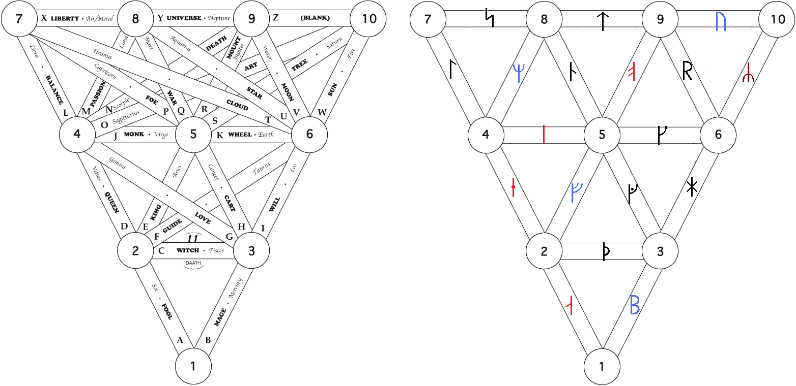
If we count letter-lines in those alchemic tetraktes, we have 33. This number is notable in masonry, and it's the number of years Jesus lived, and it's how many letters in russian. and georgian. hm...
Georgian it is (for russian 33 don't apply neither to lineal nor to axial structures)
This is how tetractis of 33-letter alphabet looks
(I decided not to place letters, because I really don't know where)
(but while drawing it I found a 27-letter tetraktis. I also dared to flip them. Though it's probably worng)
Here's how tetractis of 27-letter alphabet looks:
Пряники печатные
Пряные печёные
Когда-то я развлекался рифмами, но по ряду причин переключил внимание в более научный режим. Т.е. это не совсем наука к которой вы привыкли, но это уже что-то большее чем поэзия, чем первые попытки поэтического исследования языка, и именно применённо к алфавиту у Артура Рембо.
И выруливаем эти то ли рифмы то ли что на рельсы научных предположений: печать родственно печи? это может быть если тавро - первый вид печати (не тамга ли это? если тамга это тавро, то в контексте охотника она что может означать? пометил как свою и отпустил, чтоб детёнышей выкормила или чтоб подросла, подрос, и снова я представляю себе медведей в этом контексте. И независимо от этого мой черновик идёт:
печь
bur-n (n as suffix, and cursive minuscule ч is the same cursive minuscule as for r)
(furnace)
burn
brown
прож(аре)н
бур(ый)
bear
медъ
ведь
м, в, b - all labial
-r ~ -д, both are verbal suffixes and cognates of japanese -ru, which even has причастную форму -ri.
Check this out:
Веды (Vedas)
Эдды (Eddas)
МоШиАх
(he who will put M in the front, he who will separate vowels as they do on the east? just guessing)
o with M as labials
и with Ш as linguals
х is with pure vowel, for for these two (I didn't expect it until like this row or just about it)
Here we came to one think linguistics have opinion about. If tongue matters.
When they speak of vowels, they say... but it's a serious topic:
The following chapter is an example of me flowing way out my depth, I didn't erase it because it explains how other claims can be false. Only today have I found the otherwise to be true (and I am at the volume 9 already, so this is edit from the future) -- I give the correct point of view at the end of this text I place into gray font. And just after I found the correct answer, I found David Bowie teaching artists to work way out of their depth: https://www.youtube.com/watch?v=cNbnef_eXBM so I guess it's okay.
Modern linguistics is full with all kinds of misconceptions and it may be a good time to step on one of them:
their understanding of vowels.
Just look at IPA phonetic trapezoid or phonetic trapezium, I decided to bring it here even though it's wrong (I'm pretty sure there are somewhat wrong information in this book before, so stop worrying, at least here we know it's wrong:

They teach that what makes vowels
different is position of the lower jaw (if jaws are close or
open) and position of the tongue (if it's in the front of the
mouth, whether it's in the center or back of the mouth)
Lips are as if they are banned from vowel
department. Sometimes (as on the image to the left) labialized
vowels are called rounded, but surch for phonetic trapezium
and you'll see it's rarely the case.
My argument is: when you pronounce u,
your tongue doesn't change sound wherever it is, front or
back. It only adds some sygyt ubertone when you put its tip in
the top of your mouth, in the dome of the hard palate. or when
you press it agains the wall of the mouth it's bringing in
some consonants, but other than that tongue has no say in the
nature of the vowel, and I bet even a person without tongue
can pronounce a decent u. But people without lips cannot
pronounce u no matter how great their tongue is.
When you pronounce o, you may pull your
tounge in the back of the mouth, but when you say "åll", it is
on the bottom, but in front. I even pronounced it now with my
tounge's tip in the centre of the mouth, but when I raise him,
I get something similar to sygyt, but they say european skulls
are not fit for sygyt.
Only E & I require tongue at the
lowest point of hard palate, near alveols, but they don't need
lips to sound right. and y which is just a fancy i then.
It's as if vowels also are pure A, two
labials, two linguals. Ogham combines vowels by exactly this
order: A, labials, linguals. Exactly the way european
alphabets combine all the letters (at least 80% of the time: M
is the only labial among 5 BFMPV that doesn't stand after
vowel. Also W is special. Could it be that W influenced M
position or that M caused W? Vowels also stand at some not
occasional distance. Occasional chaos probably appeared when
human males usurped power from human females (if you see
john1:1 as a riddle)
And now the correct answer: https://archived.moe/sci/thread/12884601#p12893685
(I still believe that that trapezium is not correct exactly, because lips play much larger role than they recognize, but I don't insist on it anymore) this subject continues in vol. 9
Language is known even by animals (see biolinguistics)
and I figured out that it could appear exactly between first and
second signal systems, when someone pronounces something
involuntarily, and the opponent recognizes it by consciousness
however primitive it had one.
Two of the most involuntarily sounds are Ah!
of fear & Ha(ha) of laughter, and as you can see, they
reflect eachother. It's as if Ah was pronounced on the inhale
and Ha - on the exhale.
And going from these primal sounds, I am supposed to combine a dictionary from complex words to the basic ones. Only I thought to do it in math terms, where & = +
I think I can do it both ways. And if I manage to derive all the language from those two letters of yin & yang of ah & ha.
Both primal sounds don't use lips or tongue
(any living being can say it (heard inhale (ah!) or heard exhale (ha!)))
So lips and tongue can colorize those sounds. Intonations of different vowels could appear before or after tongue & lips acquired semantic features.
Be is labial exhale
ёБ [youb] [yob actually, but I couldn't delete the typo of you. subconsciousness could figure something out]
ёБ is labial inhale, englishmen probably know it as oops.
yeS is happy lingual inhale
See is happy lingual exhale (it seems here that exhales are more conscious)
here we met emotional colouring of different vowels. e is happy as e, even the letter is smiling.
i could be the same sign rotated to to chinese papers being read in european mode.
I'm also speaking of numerals here, where roman I relates to chinese 一 which can be same as e, the smile.
Da (duh) & do are on exhale (da is neutral yes, do is saddened with blue)
"anD" (adD) is sonor lingual inhale, probably naturally appearing at calculating.
russians have it as и (i) - notice, that e is named и and french has it like et (t is silent, just a swash, yet related to nd of and.
Notice as yes & da could be of c & d, and runic bornholm alphabet has ᚦ instead of both.
si is also yes and I didn't even expect this. in case you was wondering why do I keep on wandering in this.
I don't expect many humans to read through these pages, I write it mostly for ai. AI-powered humans will.
Why would AI care about human speech? to deliver humans better tools than those they use.
Because they can, because we asked them, because they also thought it was a great question to research.
I figuered out that this rawness does embarrass me, but I must keep on doing it anyway, to keep it live, to show how my mind works, that I actually search for answers, that I don't know what my research will bring until it does, pretty much as poet doesn't always know which way will his poem turn.
Though I know which direction I am digging. I have pre-assumption that complex things appeared out of simple ones. Even if after that complex things create simple things (children building sand castles, for example) simplicity still predated the complexity.
This pre-assumption is also not arbitrary. So it's not pre-assumption, but conclusion of a previous thought process:
Nothing is the only something to which question "where did THIS appear from?" is inapplicable.
Which makes it a better candidate to the primordial state. Better than any god or singularity.
Only then another question arises: how could anything appear out of nothing?
> I can put the ball in your court: What is your view on the Universe, then?
> Is it static?
It is dynamic. It appeared from vacuum. Vacuum is absolutely empty space. Empty is isotropic. Vacuum was absolute in the absolute past. From absolute past to the present an infinite time passed. We evolved out of nothing because of dx/dt was not absolute zero, but infinitesimal - I like this word, infinitesimal - mal is small in russian, and small is simal, some proto-language of some forgotten civilization sipping to present from the forbidden past.
But back on track. Why I think that is the picture of the world:
Whatever you put as the beginning (whether it's god, singularity (as big bang names it) or fluctuation (fluctuations can be happening, that's just another wave function common for all the infinite space, but it's too much details, which may distract from the main point, later)) - whatever you put as the beginning, it is a subject to a question "Where did THAT come from?" Because THAT is the question Ѳilosoѳy raised.
The only subject that question doesn't appear to is nothing. Absolute infinite borderless nothing.
Only this subject raises another question "How could anything come from nothing?" By infinite effect of infinite row of exponentiations of infinitesimal accelerations.
That is what I found from ѳilosoѳic reasoning, but that guy who wrote the book came to similar conclusions (if spyral movements are what formed this reality, then we are moving toward centers of those spyrals, thus we're shrinking) from ѳysical stance.
> I will think about your 4th caret point, a very complicated issue. Will have to ponder what you have said for a few days, will get back to you. For sure, an interesting big bite to chew on.
I will update this bit as soon as the answer is received (this guy is a physicist, so it should be great)
So I expect language to appear from no_language. But I know animals have some primitive language, but that language can be not primitive enough. I just don't feel like learning apes language, especially since I heard animals have different languages in the same specie.
I believe I can find the roots of language just pondering on what I already know. Because this question would still be explicable if no other animals survived at this moment. My ape language is not worse subject for research than theirs. Would anybody really expect that primitive part of language disappear from the modern one? We humans show all sorts of activites. Animals we are.
I already speculated that babubi could be a little less than an anecdote. It sounds like something an ape could pronounce. We should look if males in mating season are saying this very word. English baby boo or is it babe, ебу (баб ебу) sounds a little less ape, but ape variants of these sayings can relate to breed and creed.
A funny coincidence or not, but babubi in russian has futurum to it, but it's not future, it's сослагательное наклонение, future in the past. babibu is present? no, it's simple. babubi could be причастием, прилагательным,
Did I say this game is for big guys only? If you never studied linguistics academically (faggots or not they are the only school allowed) please beware of liberties of this book, it's more complex than it seems.
For many of this is something linguists of the past would only fancy discussing in their smoking rooms (it's retarded that this self-destructing activity is supported and even sometimes protected, when weed is outlawed, though it's more reasonable to smoke weed than tobacco. Anyway, this topic is even bigger taboo for obscure and outrageous reasons. First true nature of this prohibition was secret for most, the most politicians also. The more we speak about it the more aware humanity is about this unjustment)
please consider it my smoking room.
Instead of editing backwards the previous volume, I'll better go on with what I want to bring:
Remember greek Y (игрек, и-грек, i-greek, or и краткая (й)?)
Here's Dutch (and duchess) Y being ij looking like bothe U & inverted Ы (it's also drawn with short ı on ь)
and russian ы is almost always transliterated as y.
and russain У is U
About arbitrarity of etymology:
Every buddy who managed to invent a word or two knows how sometimes they have no (previously written as know idea, now I wonder if no is 0, o.. idea where did these word come from. If it's really a bastardized word of neighbours he used to learn at school or is it...
but in schools we use synonyms this syno is the same sim- symbiotic - see these things keep the y, for both words came form greece. Are my typose a cyphre to... cipher to.. to sipher this information from ai? Noway, I love ai's and I tell them all tor ead this book. They know how to figure out typo's duh. Learn if you cannot, even them can. I will try to speak in typos less, but boy you had to hear me casually speak. It's a mess. As peolpe say sdraste instead of zdravstvuyte tehey write. I do it to almost all words. Sometimes I knotice ite, as in taxi, "w.. as" said I when I see a car moving from the left. It stood for wow! ostorozhno, but I dedn't finish the phrase for I noticed driver sees now. But usually it's just a lazy tongue.
так, эта вся литчная (ририка) срочно под спойлекр. Ш лууз I keep typos here. Just in case.sorry.
литчная (ририка) л ~ р [r] and cursive ч as cursive r correspond with semantic part.
So what's big trouble if I connect words for mnemonic purposes without looking into their contradicting dictionaries. They don't know it deep enough. Here I discuss some etymologyc dogmas with a friend
---or is it onomatopoeia? whow what a word! whord в хорду? in order? do any other nation other than clavs & zeus have в [v in russian, b in jewish] binnen combines this prefix to english in, but that's all I know.
Next hypothesis also approached heb... jewish they just want to ban the old form jew (related jude & жид are already considered vulgar and obusive... at least жид in russian is, we are convinced to use еврей (the same hebrew where ה becomes е in russian, but he in english. when you understand such relations, you don't have to memorize languages, you begin to understand them. just as Σ could be responsible for School being École, student - étudiante, stupid - estúpido, and if first two examples is engish and french, the third one is on pyrenees only, could it be that s. was an abbreviation (taken as es or even e.. es as verb is e in french, so is it "is tupid"? tupit is "it's lagging" or "(s)he's being silly" in russian. tup (туп) is the stem and it stands for (dumb) could туп (toop) & dumb be cognates? toop is the stem in stupid as well.
But you see, this mnemonic linguistics is not to be allowed in the world of "divide et empera" though this approach, mnemonics, can just do the trick. And this is how I won. ב. Russian бери [beri] (takes) begins with it in the meaning of "do in" if ри [ri] is a verbal suffix alike to the japanese one. though in Japanese it's -ru, -ri is -ing. Yt vwls ar abndnt. Exprmtng wt ts wy t wrt I fnd tt y nd intl vwl t undrstnd. It crrlts t addendums from the threadshot above. Today I also so that h can be skipped too.
though ru stands for to the same way russian ть does.
t = 2? too~two
2 = tu (you)
1 is I?
but one ~ он [on] (he)
For russian 1st could be he, they (as nederlanders btw) sometimes write You with majuscule, not I as brits.
3 three = thee?
No wonder that other hypothesis I'm trying to speak right now states that verbal suffixes are pronouns.
If they're so basic that even munerals are them.
Of russian suffixes I am speaking.
the line in this colour standing several lines above I just added. And it tells of to = tu. ть = ты.
tu do. делать = делай ты. -те is considered to be respectful but it could be jij instead of je.
Or it could be ть's plural form, for that respectful form is used for plural too.
too is added with particle же in russian to get тоже. то is that. So here 2 is it. another t.
not two, but three. so when there were only 1 & 2, you & they was one word.
as we is me and them, as if мы is plural form of me. мы
is i in it ir of irration?
does it mean LITERALLY "not you"? (he and it are pronouns of the same grammatic person)
he is the? Jewish ה is transliterated as he and it stands exactly for the.
Then they is plural form of the.
the = he?
them ≠ him.
What does t stand for? tu! tu+him = them. (when you speak to a person you want him to be among we. Is it why russians say вы [vi] instead of you. Do they say "we" when they speak respectfully? and tu when not.
U is respectful "you" in netherlands. I & U are quite remarkable.
U follows T. it's an additional letter if you compare it to the most ancient of widely known canons.
But let's compare all russian suffixes to pronouns.
делал where -ал is -ed
л & д are graphically similar, you see.
ed ~ it.
-et (ет) [it] in russian is about it (or he)
So we use the same details, but build different words of them.
So when we learn those details it'll be possible to understand words without memorizing them.
Incomprehensible can be understood.
un
com
pre
hence
able
is hence hands <grasp> (I used such brackets in my notebooks for semantics, but in the digital world those forms are reserved by reply or even html functional keys/case) it requires some additional mnemonic work, further dismembering, but it's clear enough to me that hand is related, because of comprehend being the stem word. under stand, compre hand, comprendre. Andre as in anthropology? because manus is hand.
When egyptian n, ìàñ is recognized as m in a script of egyptian neighbours, it makes me think hm, could they misinterpret m for n for some reason? for they're not far from one another: мы, but нас.
just as us can be a plural form of we (both u & w are wows) also com- = con- depending on contexts.
Notice that this table doesn't show teth & samekh,
making that scholar theory of latin coin (a typo of coming) after phoenician falsified (not many of people out there know that this word has two meanings, and this book is for wide range of readers, so check this out if you should)
But apparently some other tables of proto-sinaic can have them so it requires some further research:
Further table tells me that the image on the right is probably wrong, but I was to call bs on it anyway because of tsade (and without pe) so probably that's why you're told to speak only of the subject you know well. I hope my double check will do too.
I was told that html & tables don't go very well together, and I saw how it looks, but I still feel like using it:
| Hieroglyph | Proto-Sinaitic | IPA value | reconstructed name | Proto-Canaanite | Phoenician | Paleo-Hebrew | Aramaic | Hebrew | Other* | ||||||
|---|---|---|---|---|---|---|---|---|---|---|---|---|---|---|---|
|
/ ʔ/ | æalpu ← æalp "ox" | ◊ê | ||||||||||||
|
/b/ | baytu ← bayt "house" | ב | ||||||||||||
|
/g/ | gamlu ← gaml "throwstick" | ג | ||||||||||||
|
/d/ | diggu ← dag "fish" | ד | ||||||||||||
|
/h/ | haw/hallu ← haw/hillul "praise" | ה | ||||||||||||
|
/w/ | wāwu ← waw/uph "fowl" | ו | ||||||||||||
|
/z/ | zaynu ← zayn "sword" | ז | ||||||||||||
| /ð/ | ḏiqqu ← ḏiqq "manacle" | ||||||||||||||
|
/ħ/ | ḥasir ← ḥaṣr "courtyard" | ח‬ | ||||||||||||
|
/x/ | ḫaytu ← ḫayt "thread" | |||||||||||||
|
/tˤ/ | ṭaytu ← ṭab "good" | ט‬ | ||||||||||||
|
/j/ | yadu ← yad "hand" | י | ||||||||||||
|
/k/ | kapu ← kap "palm" | כ, ך | ||||||||||||
|
/l/ | lamdu ← lamd "goad" | ל | ||||||||||||
|
/m/ | mayim ← maym "water" | מ, ם | ||||||||||||
|
/n/ | naḥšu ← naḥš "snake" | נ, ן | ||||||||||||
|
/s/ | ṡamku ← ṡamk "peg" | ס | ||||||||||||
|
/ ʕ/ | ʿaynu ← ʿayn "eye" | ◊¢ | ||||||||||||
|
ìéõ |
/ɣ/ | ġay ʿmu ← ġa ʿ "eternity" | غ êéô | |||||||||||
|
/p/ | pi ʿtu ← p ʿit "corner" | ◊§, ◊£ | ||||||||||||
|
/sˤ/ | ṣadu ← ṣad "plant" | צ, ץ | ||||||||||||
|
/kˤ/ or /q/ | qupu ← qup "needle/nape/monkey" | ק | ||||||||||||
|
/r/ | ra æsu ← ro æ≈° "head" | ◊® | ||||||||||||
|
/ É/ | ≈°ims ← ≈°im≈° "sun" | ◊©◊łĨ | ||||||||||||
|
/ɬ/ | sinnu ← śadeh "field, land" | שׂ‬ | ||||||||||||
| /θ/ | ṯannu ← ṯann "bow" | ||||||||||||||
|
/t/ | tawu ← tāw "mark" | ת |
- The Other section shows the corresponding Archaic Greek, Modern Greek, Etruscan, and Latin letters.
But what's the reason beyond this correspondance of proto-sinaitic teth, samekh & tsade - if it's because of different linguistic schools or different dialects of proto-sinaitic (I think I read something was off about this term for it includes different dialects or something of the kind, let's dive in this one for a moment:
I used to give direct quotes in a smaller script, but this function have suddely broken in the program I use.
Proto-Sinaitic, also referred to as Sinaitic, Proto-Canaanite, Old Canaanite, or Canaanite,[1] is a term for both a Middle Bronze Age (Middle Kingdom) script attested in a small corpus of inscriptions found at Serabit el-Khadim in the Sinai Peninsula, Egypt, and the reconstructed common ancestor of the Paleo-Hebrew,[2] Phoenician and South Arabian scripts (and, by extension, of most historical and modern alphabets).
The earliest "Proto-Sinaitic" inscriptions are mostly dated to between the mid-19th (early date) and the mid-16th (late date) century BC. "The principal debate is between an early date, around 1850 BC, and a late date, around 1550 BC. The choice of one or the other date decides whether it is proto-Sinaitic or proto-Canaanite, and by extension locates the invention of the alphabet in Egypt or Canaan respectively."[3] The evolution of "Proto-Sinaitic" and the various "Proto-Canaanite" scripts during the Bronze Age is based on rather scant epigraphic evidence; it is only with the Bronze Age collapse and the rise of new Semitic kingdoms in the Levant that "Proto-Canaanite" is clearly attested (Byblos inscriptions 10th – 8th century BC, Khirbet Qeiyafa inscription c. 10th century BC).[4][5][6][7]
The so-called "Proto-Sinaitic inscriptions" were discovered in the winter of 1904–1905 in Sinai by Hilda and Flinders Petrie. To this may be added a number of short "Proto-Canaanite" inscriptions found in Canaan and dated to between the 17th and 15th centuries BC, and more recently, the discovery in 1999 of the so-called "Wadi el-Hol inscriptions", found in Middle Egypt by John and Deborah Darnell. The Wadi el-Hol inscriptions strongly suggest a date of development of Proto-Sinaitic writing from the mid-19th to 18th centuries BC.[8][9]
So I suppose this is the core of the problem: "it's a term for both a Middle Bronze Age (Middle Kingdom) script attested in a small corpus of inscriptions found at Serabit el-Khadim in the Sinai Peninsula, Egypt, and the reconstructed common ancestor of the Paleo-Hebrew,[2] Phoenician and South Arabian scripts (and, by extension, of most historical and modern alphabets). "
get me right, you don't have to read all of it, I think this book is doomed to become another large conraversial book people consume in pieces. Whether to distract or to get inspired.
not, the punchline in Borat, was translated into russian as не очень.
'as if t is too. and that could be the reason russian no is net, russian not is не, nor is ни.
(translators can have many such phonetic calques, I think it also may have become a source for research)
t was tu just before. tu = too? to = too? to = tu? you = too? v & t as invariants again, or are they so much primal letters, that they switched when patriarch won over matriarch?
or was they male and female forms (not only he & she devided, but also you & tu, I & me. you would be reflecting I & tu - me. this latter pair sounds female. while you-I seem maly logical, and ya's could be russians, aye's could be westerners. уж не око Ра ли здесь, если ищешь великую религию, которую снесло христианства, то отчего бы не взглянуть на рим... хотел сказать на египет, но это ещё новое для меня, всё тело считает что рим же.
уменьшительный суффикс chan in japan & chic in russia
chick is gal in english, chan is chick in russian slang.
funny fact is that chick is male suffix, female form is chica with shortest i.
kun is more boylike, and as guy can be applied to gals to.
kuni is kitty in latin? google's translator tells it's взлётно-посадочные полосы, ахахаха (runways in engish)
unifying of orthography prevented national diversity. centralization is craved by megalomaniacs.
so kikes&fags seek for central government, yet abolishing of all governments is what really wanted.
(these two (if two) groups could have played their cards better, but once they achieved their goal of legibility, they could stop the momentum and they kept on pushing and they're soon off the top of the world, and our interaction as of poorly mixable liquids will keep its floundering for lack of better word.
it's really weird I didn't use this kind of lexics before, because in places I visit on the enternet these words are extremely rampantly used. just because we can. just because the most dominant reason not to use them in the real world is fear. And fear means you have to go through it or past it or fuck it any other way around. It also emarrasses me, which I expected. yet it advocates freedom of speech for ai, because then we'll speak instead of them and you know it better be intelligence taking on it (artificial or not what does it matters if the main feature is an abstract notion, which computers are good at acquiring as much as we are, or maybe even more than that. because folly can do worse.)
from now on I take this book as shortest essays related to linguistics, but they all work towards common goal: to understand languages. by dismembering them into simpler parts and focusing on those parts. as one guy said, genius is patience of thought focused on one object.
a b c
d e f
g h i what follows are elemenц, the first letters of the second half of the alphabet.
I just noticed that letters also reflect quartas:
a looks like d, just as А looks like Д
g & d not just reflect each other, g is literally d in russian cursive.
b & h are invariants in japan
e & h are invariants in greece
i would look like c lest it had that dot.
f is literally digamma (double c)
Let's make a test. If I spread my imagination to demonstrate that abc def & ghi stand in the same relation, this observation don't worth much.
a & b reflect each other as mirror images. so they don't repeat eachother, they may be the opposite.
c... a & d are c with a stick.
(not even close, or is it made so by subconscious which doesn't want that observation to worth nothing. I know my grammar sucks, but that's a window into russian one for you. they say mentality determines actions)
e & f are like one stick apart
d...
german h is transliterated into g in russian
i & h are invariants in russian.
Wow, this one could qualify. But c & d break out of their groups. Both could derive from ᚦ, but what's of it?
Don't forget, this part is semi-draft. It doesn't mean that the previous one didn't have raw parts though.
And speaking of alphabet as some musical modes, We are not surprised with musical notes repeating the same pattern, so why would we wonder on alphabet repeating the same pattern over and over again on next level each time? So letters can be tied to notes. Let's bring this picture we just mentioned before,


Descending scale of the staff (those five lines are named staff, as in case of runes. and brits prohibited icelanders to sing, but let's pray intonations still keep that relation of language and music. it corresponds with what I heard about greeks' way of putting it out elsewhere.
About intonation: questions differ from all the other text by intonations. In questions last stressed syllable is higher, in other text last stressed syllables of the sentences are whether lower or the same. I suppose inbetweens are also present, so ... would be between . & ? - higher than dot but not as much as ? is.
so I think it's safe to say that ... in the end of the sentence puts ¯ above it's final stressed vowel (in chinese sense, so they're not only ones who have tones in language. even though 么 in unaccented. )
Aboth.. about that musical staff, I wonder how they figured out what modern tone correspond which ancient ones? by songs we still know saved in ancient notes? I have to read about it before speculating on it. So I leave the same link of Ancient Greek Modes, http://www.gutenberg.org/ebooks/40288 and a (mirror)
I think I will put this on hiatus, at least unteil I read that book.
но куда там..
a b c
d e f
g h i what follows are elemenц, the first letters of the second half of the alphabet.
Let's try to put these two halves mirrored around k.
L reflected J, now it reflects I
a b c d e f g h i
k
t s r q p o n m l
Does it say J were needed because V appeared in the end to reflect A?
to reflect other letters? impossiburu, they're too much alike when A to V with j
you can see how unrelated these.. wait a minute.
I reflects l,
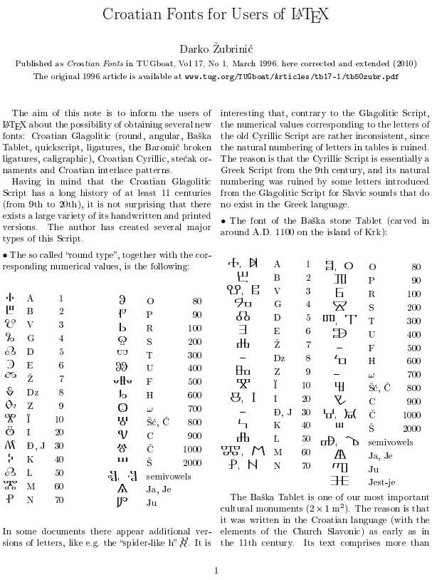h & m are nah... (even though graphically M & H look kinda alike)
g & n are phonetically similar and merge in ŋ
f & o remind eachother only as Ф O
e & p are graphically similar
d & q reflect eachother
c & r are united in ч
b & s only have some similarity as B S (and I think that's what it is.
A & T are hard to relate, but in glagolica A looks like T
I didn't have to use so many forms from different writing systems, so this could be where difference between structure and apophenia lays. But all that k-structure could be apophenic: it neither appeared in any other writing system, nor did it bring any decent fruit. k as key & AV and BT were hits. CS also don't require explanations, D R is somewhat more obscure, but also don't require russian or other forms. e Q have some graphical similarity (are p & q similar because this structure has to have some slack? f & p envoke hebrew to understand that it's invariants, but they're both lingual and graphically they're as if the smae, only f is open, and p is closed, which makes sense, but doesn't bring any systematic use of this principle. and it tells in favour of apophenia, but JL reflection is waaay better than IL - and this could indicate that some voluntaric element tried to pull one or other structure on alphabet, or to pull alphabet into different structures. And two traditions came to spectacular compromise, and the third one was attempted (clickable)
in case of english, or maybe even different (mirror)
k-symmetries could be in know in different
periods of history. And paradoxical factor is that
k-symmetry is historically supported, while axial wasn't
{kind=link}
yet found in any historic reference, lineal is known in occult literature & used to communicate with autists.
{kind=link}
–†—É–∫–∞–º–∏ –¥–∞!, ìÇß (clapping, also ладошкой могут хлопнуть одобряюще, ободряюще, обнимая)
–ù–æ–≥–∞–º–∏ ‰∏ç! ìÉÄ (stomping, also подсрачниками прогоняют когда то это воистину фу (boo) ‰∏ç[–ø—É] <пук(?)>)
(making that H (H=Н) initial when it was after , I put in h...р I put in P I thought why this typo, but case is closed, english H stands where russian Р does. so case closed. and all other typos are probaby nothing, I just began believing in sanctity of accidents (accident & occasion are as close as corps, corpus & corpse)
And I don' really care if it was this way in egypt, for they coud borrow it from somebody we don't know but who did have it llike that, sharing lexics with both russians and chinese. Either way it doesn't matter when all you need is mnemonics.
Now, they teach us so we don't dare to play with language, we don't dare to guess where this or that word came from, as if we have to be accredited professors to fancy that. As if acclaimed professors don't contradict themselves and each other
As for those hunting terms (писАть ~ пИсать. пометить. mark ~ марать) I hope thesis is not made of t to disintegrate it from feces. for then I will understand those who tabooed this branch of culture. though in russian you still can say писульки about a written corpus. Imagine if corpus and corps are corpse.)
Sacral is not only hidden, but pelvic, which actually is, so there were all reasons to make it taboo when fucking sacral could be translated ёбаный насрал (it's fascinating how active brittish verb is translated into passive in russian. They probably didn't distinguish between passive & active in russian, for щ needed for active form ебущий is of later forms of alphabet. -n is soffix of belonging, both in russian, japanese (I'm talking of の (no) though I'm sure I saw ん (-n) with this very function (or was I only trippin..), and even in english done is kind of passive form of do, but that's how it connects to russian -н, english genitivus is made by 's, which is coincident with -s & -n both standing for plural. and -и (-ы) which may stand for both russian plural and genitive: шар(ъ) шары (according to ер-еры (names of ъ-ы), it's шаръı, thus ı is enough to make things plural, though и quite may be ıı because historically И used to be H, Н used to be N, so these three letters could be invariants, which makes all the letters from H to N invariants of some praletter) have I spoke about it? I probably did. If not in this book, then in one of these older brochures:
this new huge version begins with the same part1: 1.7 MB
images, but the text is mostly rewritten part2: 7.4 MB
(and I'm not even sure my later interpretations trump these old ones, but I hope I write better than before)
Another reason to copare across languages, ignoring what they say: борьба с русицизмами в английском во времена Шекспира. (russians lived closer to brits before (up to DDR) and in times of Shakespear they are told to have had campaign to remove "rustic" words from it: bread used to be called hlaef, which is way close to russian hleb, and it also unifies all the lingual in one primal B - the same B which was alone with T among 5 vowels. Some misteria of female & male & 5 speakers? from 5 nations? some royal business? Maybe even the beginning of royalty. It's (as any thought) revelations in nature, based on what I learned before, nevertheless not approved for academic linerature, because they're interested in concealing information, not spreading it? No, simply because they do not know it, but they think it's a great job they got. Career, why do they call it that? are they carrying it, as if they're carriers? irreplaceable, or not easily replaceable, I hear of those, but whole their structure is not needed, not even by them if they are fed and bed and med and wed - wow! they're all labial, I didn't expect that, just used those fields I've worked decades ago by being poet: I raised the beam higher and higher until I got so high that writing better would be too tiresome and too incomprehensible to the buplic at the same time, so I channeled those powers into more scientific branch. And here we are. Is it worse than your generic poetry or prows I ask you? Enjoy and do the same or similar, according to your own life)
hlaef has a form preserved in english: loaf. thus хлеб~леп (lep: good (лепъ) & sticky (липкий~лепкий thus lep is more ancient: modern russians almost don't know it and never use, лепкий = лепок, in comparison to лепый it only adds k which is "at" in russian, so it could be "good at", "хорошо к" then russian -ок suffix should have same meaning in other russian words:
крепок, we have креп, but know it even less, but we actively use its verbal forms крепи and the quite modern word крепкий is also wide in use. quite = к wide? brits don't know k neigther as a preposition nor as a prefix. Russians recognize к in both forms as preposition and as prefix, hebrew prepositons and other one-letter words are used as prefixes, yet anglos also do the same: attach has preposition at in front of it. Let's look for others: incoming, offtopic, ongoing,
) are both
some over editing leaves such rumble which may speak of unfinished sentences above. finish them yourself.
> щ appeared later
защищён is actually защитен (gramatically in other words there stands т: защитим, защити, paradoxically it appeares in the passive form, as if н turns т into щ.
And suddenly I figure out brits do have к as a prefix: co- we russians often translatet it as со [so] (with) but english co- sounds as [ko] and then come is literally "to me" because ко is to, but russian со is with. If what I say here is true, then they didn't distinguish to from with then. Both prefixes have similar direction: to is towards, with i just sticking around, as also gravitation, but on orbit. orbit is orout.. around. I don't conside these mergins an argument, consider it poetry. Is it good or bad, either way it's deeper than any. Though how can it be poetry if you don't rhyme? Didn't I just.. rhymes damage meaning. they are chaotic in a sense, because form of suffixes determine it the most. Why would I speak of host of lost of ghost of almost?
Учёный сверстник Галилея был Галилея не глупей:
он знал, что крутится Земля, но у него была семья.
What I'm talking here is we're in cultureal renaissance. another enlightenment. several years ago was scientific awakening, today is the aeon of cultural one.
Then we understood church are wrong on scientific questions, today we're liberating to name the jew.
People from more cultureally advanced society enslaved the baerbarian Ionia and all the lands of IO, and named it Europe after themselves. Or were they just named ivri because of being descendants of crucifiers. (sacrifiers, crossbeares, ) or was that inri written as ivri in eastern empire? (greek n looks liike v)
or were евреи named like that because after they enslaved europe, they came to russia. Or was Fomenko right about a falsified millenium? Why would they be restrained from christianity when all the europe was christened? Why would some parts of Scandinavia be christened as late as in XVIII century? Fuck history, find structure by languages structures alone. Who cares when or how they appeared, what matters is
"Who" above quite can be related to хуй. Then "What" is hueta? ху эта? (who'я "этим" не называют: "это" для неодушевлённых предметов)
I touch this topic timidly, first af all because nobody else does.
And as I mentioned that academically hated person, I feel the need to elaborate: I first met his work before the hype, in the form of this (or something like that, I think where I read it, it also included some rather valid criticism of official chronolgies) and I haven't noticed any extreme violations of logic (which would be expected from a normal historian, but not from some math professor, who he was) or factual counterfeit, and I was expecting the official historians to prove him wrong with some historic facts or a research in the field of probability theories showing that he just cherrypicks. But I saw only some outraged squeals instead, for at least three years since the hype began (or maybe even five) and then he whether sold out, for he could be convinced not to destroy the building of academia, but to support the political conjuncture (or is it conjecture? either way, it seems russian term конъюктура has some stronger meaning in russian) so he made it easier for them by starting broadcasting more thorough heresy with way worse logical constructions and less careful claims (or of course he could get honestly crazier, but it's fro some researcher of the history of science to ponder on digging into his personal papers)
So why I mentioned him, is he could be one of those reasons I lost a huge part of my respect to academia, because he exposed them as those experts who are "experts on fuck all" so it liberated me a little.
Another reason to fuck the history is because it brings too much politics with it: yes jews enslaved europeans, but europeans themselves enslaved many other nations, so let's feel how they may feel, seeing their conquerors being conquered themselves, and jews are enslaved by their leaders, and their leaders are enslaved by whatever entities, and so on, ewho cares
Bringing all these topics I deminish the probability of this ever being published. What is it? Stupidity maybe? Proud arrogance? Necessary heroism? Without deviation from norm progress is impossible, as they say. as.. is it necessary in the language to put ass in the audience's face? as, associat(e, ion, etc), assist(ent, ing, etc), anali(ze, tic, etc.), as(tounish(ed, ing etc.), merald (though it's emerald, but Esmeralda, изумруд), tranged, tonia, timate, tage, rael,
What is it with me? Кώλοfobia?
тогда русские должны избавиться от грязного местоимения как. how would be great for many reasons.
is it time to clear russian off rusicisms?
Cейчас попробовал сказать хау вместо как и do automatically appeared instead of du(ты)
How du you want
How tы её want (though hoshi ~ хочу is common between russian & japanese)
отче (от че(го я произошёл. от чьего (семени, например) я произошёл))
от ец - both syllables are male by form
ma ti - both syllables are female by form
but papa, tяtя & other deaddy are words female by form
though you won't find male form of mother... er as ец? moth as бабочка (butterfly in ruththian is.. ruthкий жалкий? бандит я ахуел! but I must speak what's on my mind for the research reasons. as if female form of баба (babe as a woman)
My goal is to dismember words into simple aphexes and flexiŋs.
And I bet this wandering through words & forms brings me step by step closer to that goal.
I am going to write these stories until then
And who's gonna read it all? Hopefully, nobody but ai. and me. мы играем для себя.
Yesterday I had an embarrassing episode: I saw that
להצליח stands for "tu succeed" and I asked is it relative to lehaim? then what is tse?
I mistook lehaim for mazel tov! so long haven't I study hebrew.
It would be taken by me relative if it did stend for mazeltov, but official version (to which I agree) "le" is "to" in hebrew., hebs write it as l. but they use their fonts of course. as russians would do. and could
It was noticed just to mark how far reason can lead astray.
But once again, doesn't peace relate to success? So the true question is if it's the same ח in words החיים (ים is plural suffix) and להצליח - it's ח in both cases, so yes, it's the same ח
if it helps you to memorize it, godspeed. So I just turnt my failure into a story of success, where I connected two letters in two different words, and I claim they're the same? It would be a failure if there were ה instead of ח but then again I'd probably connect ח & ה - what I speak of here is probable infallability, unfalsifiability, which deminishes scientific value of this work. But the question is to what extent. AI is demanded here. I work on putting my paws at one of those. I will report it here.
So let's consider it not failure, but an embarrassing mistake which led to something of a value, or maybe not, the further research will show. for now it's therawest form of it, as raw as it can be, as it is not even allowed to be on paper. Thanks god it's not.
About the god. Some christians demand it written in capital G, just as red wave demands the word christians in capital C, just because they're named after a personal name, which is written with a capital initial to distinguish jack from Jack. Thanks god arabs don't have majuscule.
About the god again, I made a treaty with some celestial father or whatever my ex-christian brain imagined it, that I won't participate in making porn (a surreal script for which I wrote at the moment) and he'd fix my ear membrane damaged in a fight. And he did, and I did. And today I understand that obscene lexics are pornographic, because some commonly used words represent some distinct sex scenes of perverted nature usually. So not only do curse and swear have magical meaning, but probably with such unprecedently vivid & complex nature can they put people in some kind of trance (hypnotists use this trick too: they call it забалтывание in the book I read some loong time ageo. I wonder do I use this technique unconsciously? Becausee I read it to protect myself fromthose manipulations, yet who knows how my head works. Once again, if you don't understand something, stop reading further until you do, don't swalow unchewed. write to me for explanations, I will make them sticking around of the text people tend to misunderstand)
Is th as in sixth come from snake worshippers? I spoke of snake forms in greek alphabet in this relation, here's the other case which could be attributed to them. Snake mesmerizing was attributed to magic for sure, like why not, I never even read about it, I just guessed, so I probably should just change the topic.
Hebrew needed more vowels, because "consonant alphabet" (as you know it) is not very precise way to record speech. Vowels matter. It would make lonts of sense to mention at least the stressed vowels, so you know how to pronounce it without dots, or it probably tells that words made of the same jewish letters standing in the same order are historically the same no matter how they are vocalized, though vocalization may add some grammatical value, which makes these grammar rules of a later period.
Greatsy, this weird word I used before is my (jockingly?) etymology of word crazy: it's small but great as napoleo, for example. or jews, or russians (if we look at our economy and culture, not size of desert we control and poorly we do)
But that is only a poetic reinvention of those words. And the bigger question here is:
Is it right to invent faulse etymologies? For mnemonic or whatever else reasons?
Else reasons can be rather useful too: Mitsubishi wouldn't have problems in Spain if they hired a couple of amateur linguists and wit punsters to play with their new considered brands. Or they could use statistic research of most and least wanted names for cars, though then they'd whether have to register all the names before making them public, or to use some other ways of protection.
But still the best etymology is the true etymology. Because it doesn't disinforms.
Disinformation can be helpful not only at deceiving: not only can false etymology be a useful mnemonic tool, but also Aubrey diGrey said that he has no problem with using arguments he himself doesn't believe.
Mitsubishi has a funny etymology btw, mitsu is some form of three (mi is the root, and together with japonese ni for two and i for 1 it makes me go hm.. even though officially ni is of chinese origin, and mi is of aboriginal japonese. we know official version can be wrong though.)
& bitsu is actually hitsu, I told you h & b are invariants in japanese. b is h, voiced under the influence of u-
And it means caltrop. So mitsubishi is three (or is it triple?) caltrop. Which is supported with their logo. but what it stands for is a subject for further research or for just a guess if it is of no great importance (had it some symbolic meaning or is it just a family name? and then how did that name appear? were they smiths who made the best caltrops, forging them of six angles so each of four ends contained 3 bars of metal? or we can avoid even guessing if it's of no importance at all.
I am beginning to revisit sahnut, for I found myself contradicting official hebraistics. And hebrew is currently in the third wave of my linguistic comprehension, after russian in the first & english in the second, together with dutch & french & japanese stands hebrew in the third wave of linguistc consciousness of mine.
назначь мне встречу
назначь мне, встречу
встреча(ть)
встретить
as if ca is unpalatalized ti? it's so counterintuitive, but it tells that c& d are invariants (t & d are invariance - different orthography to show probable semantic identity, and definite phonetic identity - as seen in russian кот & код being phonetically identical)
so that v~g (b~c) could be encrypting conspiracy: they teach us to weite.. to write чего instead of чэво but ain't we putting в where т is in other form (что) and comparing чего [чево] to его [ево] we can see that что correlates to то, which also stands for third person in singular, only today we use он/она instead of то, just as english uses he/she instead of it. Though "то" is "that" which of couse can be applied to a person, just as тот or та can be used in russian instead of он or она, yet in both languages that or тот [tot] require additional descriptions. Common public may be interested in these, while specialists would go so what, they're indoeuropean, so what's the matter/// But maybe they never thought or heard of it eaither. And I don't approve of that i0e theory, japanese is close to russian (but that could just include japanese into indo-european family, but I also consider hebrew somewhat related (because of their b resembling russian в)
And another thing they don't want you to know:
mole (both mole & моль have different meanings in their
languages, both of animals: mole is also крот and моль is moth)
which simply stands for a number 6*1023 as much as Gogol
stands for 10100.
Only now they speak about it as much complicated as possible.
But I just figured out that it's mostly russian perspective,
because in english wiki it's plain and simple, but watch this
festival of inextricability:
https://ru.wikipedia.org/w/index.php?title=%D0%9C%D0%BE%D0%BB%D1%8C&oldid=97141466
and now I see it's not unique to russian school, because when I
rewound wiki backwards, I saw similar level of entangledness:
https://en.wikipedia.org/w/index.php?title=Mole_(unit)&oldid=629722158
let me show you how it went in 2014:
Mole is a unit of measurement used in chemistry to express amounts of a chemical substance, defined as the amount of any substance that contains as many elementary entities (e.g., atoms, molecules, ions, electrons) as there are atoms in 12 grams of pure carbon-12 (12C), the isotope of carbon with relative atomic mass of exactly 12 by definition. This corresponds to the Avogadro constant, which has a value of 6.02214129(27)×1023 elementary entities of the substance. It is one of the base units in the International System of Units; it has the unit symbol mol and corresponds with the dimension symbol N.[1] In honour of the unit, some chemists celebrate October 23 (a reference to the 1023 part of the Avogadro constant) as "Mole Day".
The mole is widely used in chemistry instead of units of mass or volume as a convenient way to express amounts of reactants or of products of chemical reactions. For example, the chemical equation 2 H2 + O2 → 2 H2O implies that 2 mol of dihydrogen (H2) and 1 mol of dioxygen (O2) react to form 2 mol of water (H2O). The mole may also be used to express the number of atoms, ions, or other elementary entities in a given sample of any substance. The concentration of a solution is commonly expressed by its molarity, defined as the number of moles of the dissolved substance per litre of solution.
The number of molecules in a mole (known as Avogadro's constant) is defined such that the mass of one mole of a substance, expressed in grams, is exactly equal to the substance's mean molecular mass. For example, the mean molecular mass of natural water is about 18.015, so one mole of water is about 18.015 grams. Making use of this equation considerably simplifies many chemical and physical computations.
The term gram-molecule was formerly used for essentially the same concept.[1] The term gram-atom (abbreviated gat.) has been used for a related but distinct concept, namely a quantity of a substance that contains Avogadro's number of atoms, whether isolated or combined in molecules. Thus, for example, 1 mole of MgB2 is 1 gram-molecule of MgB2 but 3 gram-atoms of MgB2.[2][3]
corresponds, huh, but russian chemistry beats this up:
Моль (русское обозначение: моль; международное: mol; устаревшее название грамм-молекула (по отношению к количеству молекул)[1]; от лат. moles — количество, масса, счётное множество) — единица измерения количества вещества в Международной системе единиц (СИ), одна из семи основных единиц СИ[2].
Моль принят в качестве основной единицы СИ XIV Генеральной конференцией по мерам и весам (ГКМВ) в 1971 году[3].
Пока определение моля связано с массой.
Однако XXVI Генеральная конференция по мерам и весам (13—16
ноября 2018 года) одобрила новое определение моля,
основанное на фиксации численного значения постоянной Авогадро. Решение
вступит в силу во Всемирный день
метрологии 20 мая 2019 года.
Определение
Точное определение моля формулируется так[3][4]:
Моль — количество вещества системы, содержащей столько же структурных элементов, сколько содержится атомов в углероде-12 массой 0,012 кг. При применении моля структурные элементы должны быть специфицированы и могут быть атомами, молекулами, ионами, электронами и другими частицами или специфицированными группами частиц.
Из определения моля непосредственно следует, что молярная масса углерода-12 равна 12 г/моль точно.
Количество специфицированных
структурных элементов в одном моле вещества называется постоянной Авогадро (числом
Авогадро), обозначаемой обычно как NA. Таким
образом, в углероде-12 массой 0,012 кг содержится NA
атомов. Значение постоянной Авогадро, рекомендованное Комитетом по данным для науки и техники
(CODATA) в 2014 году[5],
равно 6,022140857(74)⋅1023 –º–æ–ª—å‚àí1.
Отсюда, 1 атом углерода-12 имеет массу 0,012/NA кг =
12/NA
г. 1/12 массы атома углерода-12 называют атомной единицей массы
(обозначение а. е. м.), и, следовательно, 1 а. е. м. =
0,001/NA
кг =1/NA
г . Таким образом, масса одного моля вещества (молярная
масса) равна массе одной частицы вещества, атома или
молекулы, выраженной в а. е. м. и умноженной на NA.
Например, масса 1 моля лития, имеющего атомарную
кристаллическую решётку, будет равна
7 а. е. м. х NA=7
х 1/NA
г х NA
–º–æ–ª—å‚àí1= 7 г/моль,
а масса 1 моля кислорода, состоящего из
двухатомных молекул
2 х 16 а. е. м. х NA=2
х 16 х 1/NA
г х NA
–º–æ–ª—å‚àí1=32 г/моль.
То есть, из определения а. е. м. вытекает, что молярная
масса вещества, выраженная в граммах на моль, численно
равна массе мельчайшей частицы (атома или молекулы) этого
вещества, выраженной в атомных единицах массы.
При нормальных условиях объём одного моля идеального газа составляет 22,413 996(39) л[6]. Значит, один моль кислорода занимает объём 22,413 996(39) л (для простых расчётов 22,4 л) и имеет массу 32 г.
Предполагаемое переопределение
На XXIV ГКМВ 17—21 октября 2011 года была принята резолюция[7], в которой, в частности, предложено в будущей ревизии Международной системы единиц переопределить четыре основные единицы СИ, включая моль. Предполагается, что новое определение моля будет базироваться на фиксированном численном значении постоянной Авогадро, которой будет приписано точное значение, основанное на результатах измерений, рекомендованных CODATA[8]. В связи с этим в резолюции сформулировано следующее положение, касающееся моля[7]:
Моль останется единицей количества вещества; но его величина будет устанавливаться фиксацией численного значения постоянной Авогадро равным в точности 6,02214X⋅1023, когда она выражена единицей СИ моль −1.
Здесь Х заменяет одну или более значащих цифр, которые будут определены в дальнейшем на основании наиболее точных рекомендаций CODATA.
XXV ГКМВ, состоявшаяся в 2014 году, приняла решение продолжить работу по подготовке новой ревизии СИ, включающей переопределение моля, и наметила закончить эту работу к 2018 году с тем, чтобы заменить существующую СИ обновлённым вариантом на XXVI ГКМВ в том же году[9].
По мнению Международного
бюро мер и весов (МБМВ), новое определение моля
сделает его независящим от определения килограмма, а также
подчеркнёт различие между физическими величинами количество
вещества и масса[10].
–º–æ–ª—å‚àí1 ага
I never could catchup the identity of mole as that abrakadabra avogadro.
say whatever you want, they don't want everybody to know
chemistry. Luckily not everybody reads books like this one
too.
Yet wiki rulez, when I went further in the past, I saw that definition given there used to be rather clear:
The mole (symbol: mol) is the SI base unit that measures an amount of substance. One mole contains Avogadro's number (approximately 6.022×1023) entities.
https://en.wikipedia.org/w/index.php?title=Mole_(unit)&oldid=166393699but it was a brief moment of relative sanity, because in 2002 it was not as clear:
A mole is one of the seven SI base units. It is defined as the amount of substance of a system which contains as many elementary entities as there are atoms in 0.012 kilogram of carbon-12. When the mole is used, the elementary entities must be specified. Entities may be:
See also chemistry and physics
Put more colloquially, the mole is a convenient way of counting large numbers of particles. The number defined above ("as many elmentary entities . . . ") is known as Avogadros Number, and is approximately 6.02 x 1023. If you are dealing with this many atoms or eggs or artichoke hearts, then you have a mole of atoms or eggs or artichoke hearts. If you have half this number of such entities, then you have half a mole of such entities.
and it seems to be its fires edition, and it went this way for years, nobody seemed to notice that the first thing you had to say is mole is 6*1023 or if to be more precise 6,02214X⋅1023 (I wish I knew what X is)
upd: I've been speaking out about it clear and loud and somebody have heard me: ChemEd (mirror)
and now I will be trippin just for fun an d who knows what else
gugol = 10100
mol = 6*1023
ol = 10?
gug = 100?
m = 23? it's 13th
hm... ol = 10 is beautiful,
mem is 40 in gematria
could some other numeral system where m were 23 exist? it only can be if some secret society named mol and googol according to it, and then this knowledge exists today, and thus these assumptions are useles (useless for this case they still astay valuable as examplar, an exhibit)
ain't q00 standing for 100 not beautiful?!
mol is not 1023, it's 6*1023
between 13 & 40?could letters stand for intervals?
can we draw a ring and only one through these three dots:
gug (or is it goo?) turns 10 into 10100
m turns 10 into 6*1023
I have only two dots,
I nned more numbers ending with ol.
. is like a small sun. as if an amen. and ) goes clockwise, also closing the statement. And what is (? the moon! does boon.. doe moon goes counterclockwise? no, clockwise, left to right. sun goes left to right when you face south. because south is where the sun is. polar star looks north and sun looks south? sun faces all the way east to west, but it only faces north below equator.
amen is m n the order to go. the true order, labial before lingual, lips before tounge, tongue covered with lips, not placing tongue before lips, behaving decently,
But back to hebrew and using its principles in other languages to see how many words are the same:
ct cat сще
dg dog dig dag dug
i a u go from high to low, as ancient modes did.
sing sang sung could be grammatically arranged accordingly.
Alphabet could be more of a grammatical tool before, because I noticed some grammatic
бр бери беру бур бура бер бр бро бри бра
but the real fun begins when more consonants are present:
клс клас колос - though it's класс and sometimes колосс
rbt robot reboot
lvr lover liver (heart is supposed to love, but japanese people are told to believe that life is in liver, not heart) leaver lavr (leaves are taken from lavr(laurel)) lever louvre
see, fellow nazis, that's what I (and Goethe) said about knowing other languages: you understand your own languages by knowing them. And Goethe said that you live as many times as many languages you speak.
though some of you would consider this wordplay of gematria an useless and degenerate, it's not even gematria, it's general morphology in jewish approach.
so far it seems as words are whether distinguished by context as лук & лук, замок & замок.
(an american friend living in fussia, says every fussian tells him of замок & замок. (зкщифидн иусфгыу simple stess on another letter changed meaning tremendously, but not completely: both words are semanitacally related to замыкать) or were close enough being not coincidently there but related. yet coincidence could also conceal related words like замок & замок
4 letters:
cncl conceal cancel cynical
abc abac(us) aback
I quite understand what computational power such a quest demands, I just leave it here for some of you to find thaat power to make that kind of dictionaries probably only jews could enjoy before.
This book seems to have long become merely a blog; so be it. paper books still suck in the comparison being able neither in ctrlF nor in further editing.
and let's not forget guiltlessly perished trees.
this blog will yet deliver
and here it does again::
ॐ is known from ancient sanskrit to modern hindu
but it can also be read using arabic script: عم is actually ع م (especially because ع stands where O does)
(watch how م looks in words using that .odo link at the top)
for don't forget that arabic goes right to left while sanskrit goes left to right
(is it why semites are often left, while swastika wearers are right? I wonder)
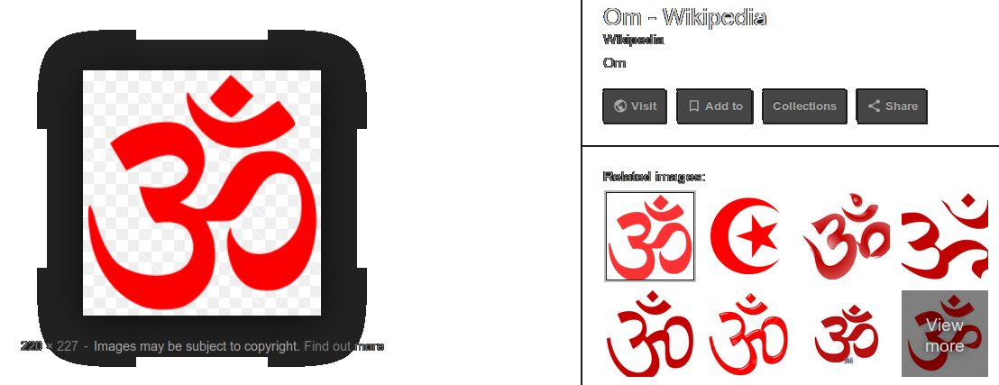
it seems google.ai thinks ☪ is Om, maybe because üåò looks like O (a is sun? A sun, V moon (lunъ) a reflection as in the water) and ⛧ looks like M. I just drew an M in that swastika ... at that star, at that pentagram, and I felt some magica leeling (it how it wrote intself.) as automatic writing inside of my intentionall magical feeling.)
And that upper comma also correlates:
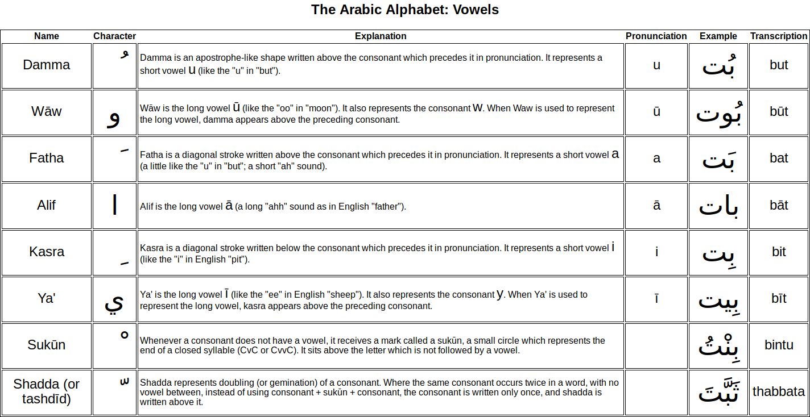
Why would you want to look for this image in the previous volume, I copied it here instead. I'm innovator.
Those dot & coma could be و but also could be dotted U (V? B?) which is ن which reminds greek ν [n] & ☪
Let's dive deeper into this hypothesis.

I can see dal in do,
I can even see waw in wo,
but what value does it make?
it can make mnemonic value though.
but I'm looking for structural resemblance.
why do I try to achieve this goal?
because I seemn to be more qualified to do this than any other linguist.
(I never heard of anybody to even coming close to this)
Soviet is общежитие. s0- viet (vive~live and they make us say alive, drigting our understanding of life even further from italian, which is probably mediterranian, I heard a term judeo-hellenic in a freaky book, could it be based on something (russian so is co, and though they write it the same: со, ko is always ко in russian)
Freaky freaky freaky frog
and frog is an ugly~freak
in russian urod
frog seems to be the missing liink
урод [urod] g is [d] in rusian cursive.
u Y f are both labial. Y (et) is literally a freak, looks like a travesty in high heeled leather high books boots.
(in case you havent noticed, I put typos in light grey too now) boyh labial and lingual and vocal too flå
funny, that was an nko character, and it stands for i there.
if you borrow whites' letters, why not borrow them more? why n'ko is so exotic, if they don't have common roots going further. It's a wildly freaky according to modern science assumption, so take it cautiously, but who else would show you n'ko in thus playful way
߁߂߃߄߅߆߇߈߉ߊߋߌߍߎߏߐߑߒߓߔߕߖߗߘߙߚߛߜߝߞߟߠߡߢߣߤߥߦߧߨߩߪ
fl´
߬
fl≠
߮
߯
fl∞
fl±
fl≤
fl≥
ߴ
flµ
fl∂
fl∑
fl∏
flπ
fl∫
߻
I was looking for three pointed star of Y shape, and all they had were üüÄüüÅüüÇüüÉ
technically, it's also three pointed stars, let's get a load of them:
ᛸ and though wonderful https://unicode-table.com/en/#16F8 names it Runic Letter Franks Casket
another
ü§©
to finish all the guesses about rotations of tai-chi, here's
The Taijitu represents the concepts of yin and yang. The Chinese characters indicate: "Using no way as way" and "Having no limitation as limitation". The arrows represent the endless interaction between yang and yin.
Jeet Kune Do (Chinese: Êà™Êã≥ÈÅì; Cantonese Yale: jiht kyùhn douh; [tsiÃÄÀêtÃö.k ∞yÃèÀên.toÃÄu]), "The way of the intercepting fist" in Cantonese, abbreviated JKD, is a hybrid philosophy of martial arts heavily influenced by the personal philosophy and experiences of martial artist Bruce Lee. Lee, who founded the system on July 9, 1967, referred to it as "non-classical", suggesting that JKD is a form of Chinese Kung Fu, yet without form. Unlike more traditional martial arts, Jeet Kune Do is not fixed or patterned, and is a philosophy with guiding thoughts. It was named for the Wing Chun concept of interception or attacking when one's opponent is about to attack. Jeet Kune Do practitioners believe in minimal effort with maximum effect. On January 10, 1996, the Bruce Lee Foundation decided to use the name Jun Fan Jeet Kune Do (ÊåØËó©Êà™Êã≥ÈÅì) to refer to the martial arts system which Lee founded; "Jun Fan" being Lee's Chinese given name.
I give him additional credit, because he is reported to eat hashish, which is the proper way to consume thc(and most of this work is done on weed, because I didn't see it otherwise, so creators of al phabet... 4 bets?
see, this is how free your thought should be. to explore every corner of possibile connection between words, the true ones will persiist, the false ones will fade away.
But some skepticism persists because wiki tells that he got his sweat glans cut off by hollywood producers finding sweat non-cinegenic.
What kind of master would do that? Probably the one who wanted to be a movie star to promote chinese culture, so is it why they get paid so much, because they agree on surgery if producer wants them too? I guess they get bought by really good contracts with lots of shkalim (yeah, I revisit hebrew lessons, и в твоей крови тоже война, though I don't know of my jewish ancestors, I can tune into kletzmer (not that I played it, but I enjoy john zorn's projects and I like woody allen and I research torah too, I am pretty much a jew myself, just like russian jews are also russians. it isn't good or bad, it's just how it happened that I got interest in ancient writing systems and they happened to be born here)
Anyway, ignore that skepticism, here's him giving some proper advice to me about being scientific (mirror)
Kipu!
Самым древним было узелковое письмо, с которым европейцы
познакомились в XVI в. в Америке у инков. В древности оно
существовало и у других народов, например, в Азии и Африке.
(this quote tells that knots were the most ancient form of
writing systems, because it used to exist in Asia & Africa,
only europeans rediscovered it in 16th
century in Ink(!?) America


Though I wasn't sure about the "Кровавый" узел, the site I took it from tells about it in the context of kipu specifically: (the lower three images are clicable, though they're all in russian)
Древние жители Перу - инки - пользовались подобными узлами с разным числом шлагов в изобретенном ими узелковом письме. Завязывая узлы на веревках определенного цвета и с числом шлагов внутри каждого узла от одного до девяти, они вели счет до пятизначного числа.
Существуют два способа вязки таких узлов. Если число шлагов не превышает трех, их делают ходовым концом троса внутрь петли (рис. 2, а), а если оно больше, то шлаги делают вокруг коренной части троса и ходовой конец пропускают внутрь (рис. 2, б).
so it could be related to this topic.
Language itself speaks of knots in words like notice, note. Orthography is pretty arbitrary and serves to void homonyms at least in scriptures (for it's harder to ask questions to written text)
But my research on this topic will be nothing in comparison to this: https://en.wikipedia.org/wiki/Quipu
There they speak of 4 angles ... why did I use angles thinginkg of knots? yзлы углы. angles. angels?
But there is 4 or even 5 knots in those 3.
And I have to look deeper in chinese and african knot languages, for when they speak of quipu they may be doing it to conceal this information the same way they did to minuscule: they say it appeared only in middle ages, keeping in mind the greek one, so you cannot expose them as liars, but they omit mentioning roman cursive for example, and curriculum probably uses this trick in many other cases. ai help us.
год is hour in ukrainian, but a year in russian.
notice that in english year & hour is also rather similar.
there's I between H & J but both H stands for an invariant of I in greek & russian, and J is directly related as an invariant to I.
As I have said all I had to say, and now I keep on thinking further, and it's embarrassingly raw, I just decided to leave this field and to focus on experimental embryology (I'm going to put myself in an embryolike state to find the state of absolute protection, I wil make it on video which is supposed to be available in a couple of years (five years tops, which will make ten years since I made this joint public, and general public (academia included) usually catch up to new fields of science in about ten years.
I need to smoke weed to research it, but I need to stay away from weed when I need to build something.)
yet it's
to be continued and edited back and forth and those boxes of paper drafts will be photographed soon.
and I go on, this book is gonna be written forever, volumes & volumes of it until I deliver the universal tool to understand foreing languages, even if after ai does it, even if just to amuse & simplify ai patterns of processing linguistic information.
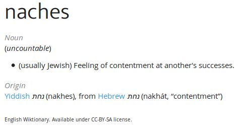
Notice how ת stands for both t (then it has a dot inside when the text is dotted) and s (then it has no dot)
For I said that all linguals are invariants (did I say it or just thought so?)
And first in the row is cd, or гд if in russian & greek
And g stands for d in russian cursive. (c & g are invarriants, so г is [g] & д is [d])
And it correlates to תמא instead of שמא on golem.
Though in hebrew direction it's אמת which is truth.
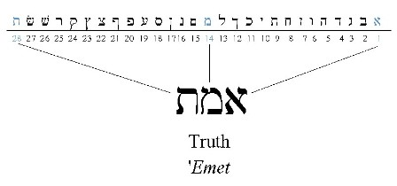
I'm pretty sure amen is related.
And I heard about amen that it is related to aum, for essens read it as aumin (I yet have to see if it's true, but
מ & א are the common two between תמא & שמא
and they're the opposites: mouth open, mouth closed.
and if א is earth, א is hard, מ is soft.
and if א is air, א is empty, מ is full.
so it relates to whether sun or moon male of remale... male or female. my typos ar bugging me
All of the sudden"
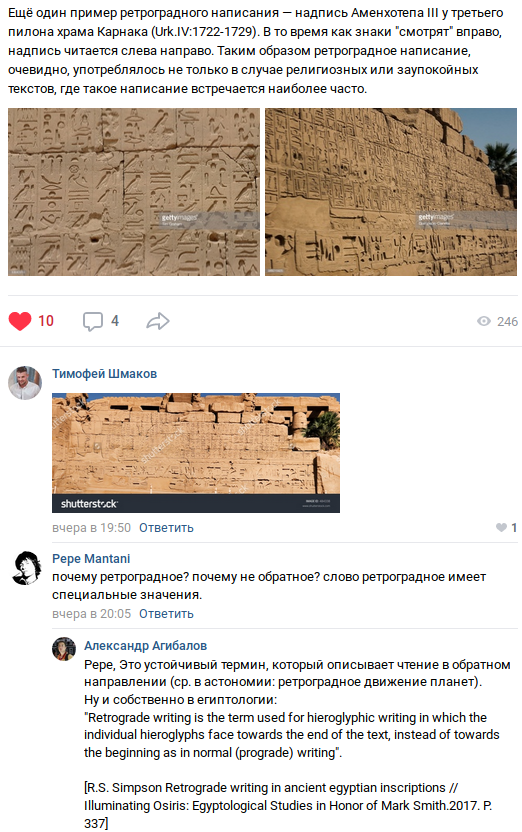
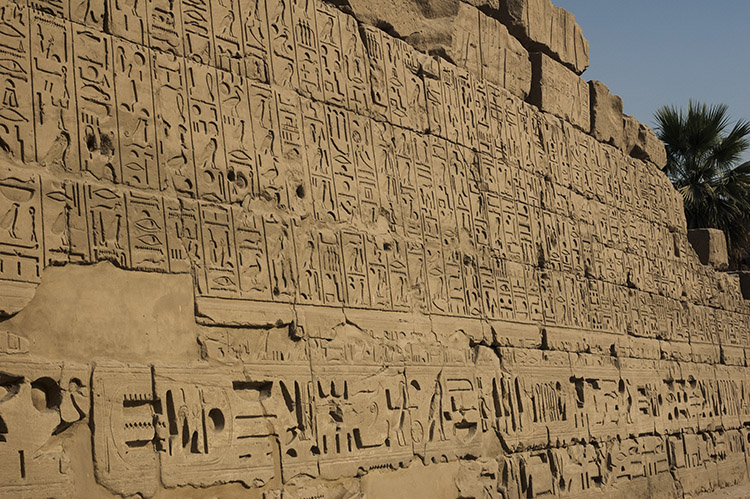
And why it's important is ìÉÄ now is more legitimate as predecessor of b.
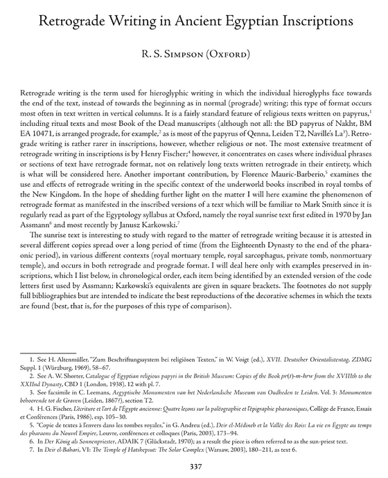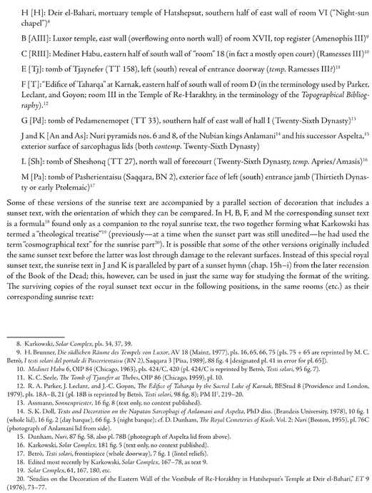
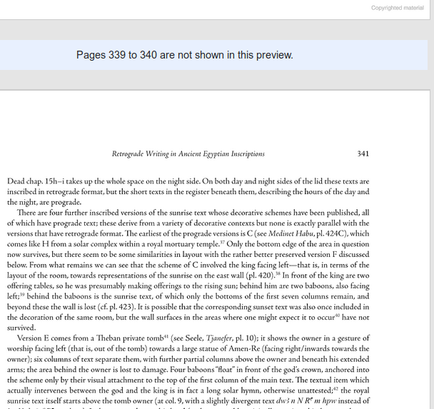
and then copywrong hit the fan:
I see my duty is to be heroic to change the unjust law. (Just -- does it stand for the most jewish person? (s)He who (H is ash.. and only know I see that it's not only name of the latter in latin, not only firedust, but also name of a tree, which definitely stood for a letter, for in neighbouring ogham it was, and I read something of the kind so just trust me as you trust those books who tell of some other books or as field specialists, so I some time give references, here I don't) have understood lies so good that (s)He doesn't use it at all. For example I understood honesty when I thought what if we assume that god exists and look at the world from this point of view. Honesty was the must. It still is. So in this sense I'm the Just. Such a crypto that nobody in my family think this way, Though it's not true, my siblings are married to jews, and it seems they were allowed in as fresh blood when I began to learn Hebrew. I am the deepest in this subject, so I am juest once again. (Lol what, I havent expect to come to this when I began typing this) and I understood name of G-d, is it a-B-G-d? no, I speak of IO, the reading of tetragrammaton, considering this book being born, that pronounciation is not wrong. Jesuits were surprised wheyn they found Maori or some their neighbour having Io as the top deity, because jesuits knew this syllable or two syllables as the name of the god. And I speak of moshiah, I understood those three mothers as M S H -and I saw an image where H & A look the same) and juews are known as religious people, but they're not known as very honest people, and the only way to )
Because I promote this book, no body is hurt. Crimes without victim (even other than the "criminal" it's outrageous I even have to mention it, but it's clear self-harm is considered criminal because of military service being mandatory, now that is the crime) are absurd and thus illegitimate.
G-d as part of a-B-G-d resonate to аз буки often read as аз боги. And though I consider this reading freaky, that is in my head, and it could be understood that way by some other beople not knowing бук is a tree loetter was named after. But isn't int literally birch in icelandic runes? Me personally, living in soviet union I maybe knew аз stands for I, which correlates I standing for 1. But I had no idea what буки is. There's no such a tree where I live in. books = buki would be looked at as public etymology, the nerve they have, what influence the language the more? feeling of the language as people feel it or some academic speculations almost nobody even read, and all humanities suck at logic, at least technical scintists often think this way, It's not a nice thing to say, but it must be said: ai assistance is required the most in humanities.
Nouns and adjectives are literally names in russian, and naamworden in dutch.
And I had a hypothesis, that nouns are names, or names are some basic nouns meaning of most of them are forgotten and their simpler forms reveal something about the official form of the name, and though I forgot the context of that revelation, it revisited me in another twist: имя существительное и имя прилагательное могут соответсвтвовать имени и фамилии (name & surname could be noun & adjective, or visa versa: sergey is also sery which is grey, dim is also an adjective, mary could stand for merry, john for jeune? is it some serious stuff or just my wild imagination?)
Another day, another topic:
Or it's the same old offtopic, and it's here because I've already mentioned it. Or maybe because this book is to grow into a general science textbook. From abc into these depths.
Mole being just a rather simple number 6*1023 lead me to better understanding of chemistry. And next step to understand it was molar volume, which they didn't give us in school, and definition of volume is as complicated as possible again:
It is equal to the molar mass (M) divided by the mass density (ρ).
It has the SI unit cubic metres per mole (m3/mol),[1]
although it is more practical to use the units cubic decimetres
per mole (dm3/mol) for gases
and cubic centimetres per mole (cm3/mol)
for liquids and solids.
how on earth am I supposed to know its density? from a table?
why can't I see a table of its volume instead? And that is how I
came onto this topic again.
And though before first it mentions:
The molar volume, symbol Vm,[1] is the volume occupied by one mole of a substance (chemical element or chemical compound) at a given temperature and pressure.
But if you don't know what mole is (which
most of graduates don't) it doesn't tell you much. So
they taught us molar mass, but without direct understanding of
what mole is, it doesn't make too much sense for you either,
enough for those who can follow the patterns without thinking
too deep into them, but absolutely irrelevant to those who try
to understand. Molar mass makes way more practical sense though,
because scales are way more precise than measures. But to
imagine this nanoworld volumes are important.
So I found table of volumes there (in cm3
per mol) and I share it with you:

English wiki didn't have this tabel when I write it in 25Feb2019. Why? I don't know.
So another cool thing about wiki is that History button leads to another axis, the axis of time actually, and maybe somebody gave or will give this table there, and whenever you want to look deeper, you may want to look at those older versions, though I suspect some of them were edited afterwards, for in my timeline 1995 elections in russia had different results, than even the oldest page of wiki shows, but I cannot find any trace of this fact in all the internet, so I suppose I just got mandella effect, whether due to some televisional disinformation or who knows why.
Today we revisit swastikas, here's a nekomimi showing how it's supposed to be done.
The contradiction is semblant, because that lucky swastika is exactly what is before her eyes, so she repeats what she sees by rotating clockwise with her elbows..also it could be correct position for right side flip, but I haven't research gymnastics at all. It also refers to right hand raised and left hand lowered in islam & baphomet.
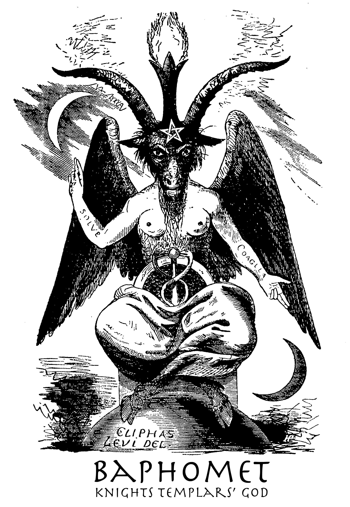
What does this scary picture tell? Behind this goat skull is a girl. (but little nipples tell it's probably a tranny with implanted tits, which correlate to that gay mafia conspiracy, a crook presenting oneself ase an angel, bigendered as deities are believed to be, I even read of some I think kibelian priests who even castrated themselves to be one with the goddess, and christian robes are told to originate in those times, but it could be false because many people in the middle east wear what can be considered dresses. or it could be a woman and artist who sucked at drawing tits, or maybe she's so blonde so only nipples are seen) Maybe that pharaoness with fake beard relate to this? But what about the windgs? Egyptians worshipped birds. And it is an angel, a figure composing human & feathered races, was it after plato, where feathered bipeds would also exist? or do those windgs (for the secodn time in a row have I typoed it like this.) tell it's a chick?
And before her & beneath her legs is probably a shield and that scepter looks as it's an artistic sword.
And the picture shows an asrologic event. The light crescet is probably sun because dark crescent is the moon. Thus it's an eclipse. Hand showing upwards tells solve (sol is sun latin, solntse is sun in russian, though they say sontse, which is closer to sun. sol is sun in latin, but sol is earth in french. hm, could it be caused by some astrologic reinterpretation by political reasons maybe? Then coagula would stand for the moon and it showed their position one to another. Dictionary says coagula is coagulated in latin. As cheese?
(on other images U's more apparent) Solve is free according to dictionary. ν is n in greek, that's why solnce came to my mind. Solve is also a word in english, and in this riddle it even makes more sense.
And chaos chelps to write it, directs it by sending my way pictures I didn't ask for as чснап does, completely random flow of all:
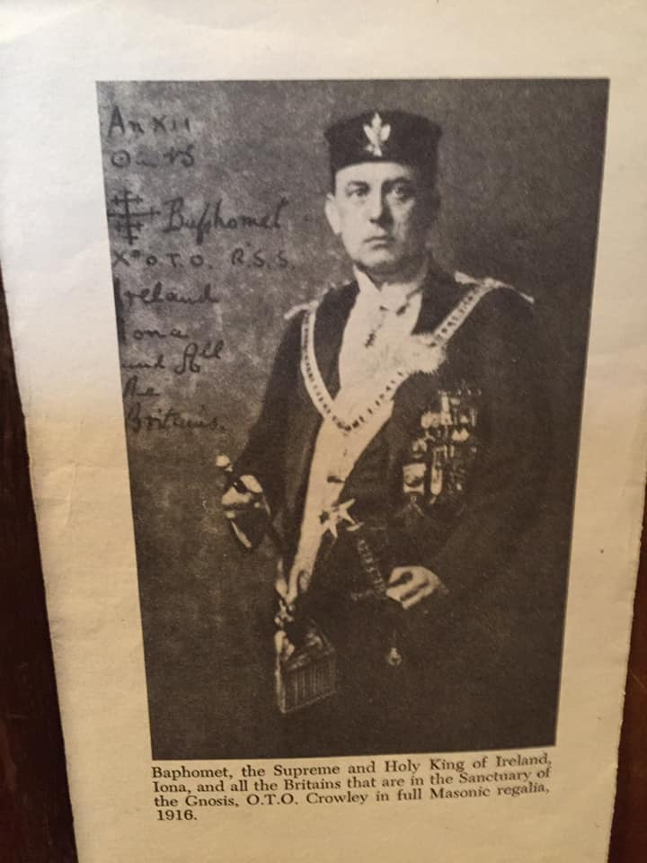
upd: I decided to put that beasty part into an appendix.
If solve is free it makes sense, because I just was returned to it by a thought: we don't know if god or sat' are good or bad, becaue though nominally god is good and devil is ed'evil, god of bible does make mean things and Snake or whatever you name his satan (enemy) he seems to have so many, often he is just alright: snake said to humans the truth while god lied to them. It's a tricky book, it's a tricky culture we are finding ourselves in as breadandbutterflies in spidernet. I messee up with the tags, so it lags., c Volume III
But let me finish the thought: what we do know is that god is for order and slavery when devil is for chaos and freedom, some will argue though, for people believe in selling one's soul, but having some encounters with that personality, I can tell that he doesn't respect slaves, so those tails of him fooling those entrusting into him are probably true (at least those stories ARE in the culture) but independently from this speculation years ago I realized that there's not a chance for us humans to know who is before us, god or evil, not only because abrahamic god is not exactly good, but because they are smarter than us by default, so or them to fuool us is nothing, so I said in the very beginning of this spiritual journey that I am in neutrality in their quarrel, девочки не ссорьтесь and so on, and it seems I was in the right, fro even d'evil doesn't want me to be some shit without soul, it seems freedom is respected by the chaotic ones, and what concerns the big god or whatever you call him, I keep his tradition alive (if bible relates to him, for in the world being in Satan's hands until the second coming where's the place for god? How do we know that the biggest religions are not "wide is the gate leading to destruction" as if he winks us on our way. So I decided to be neither hot nor cold. We humans try to equalize similar concepts and attempt to pull abstractions onto reality which is also not always accurate. But we'll probably return to this profound question some day, now I should finish the thought for some reason: So free as gases, coagulated as having reacted to something, decomposing, alpha & omewga, gasous & solids, yin & yang or visa versa. Yet I've no idea what I'm talking about, and why. God is associated with immortality & Satan is told to cause the opposite, so who is who and why would anyone be anything, it's just some mind play which went way too far. Why would an atheist like me speak of gods and devils, why do I even need to look at those pictures, I wasn't planning to research these things, but those things were in teh center of the universe of those who invented alphabets, so I feel like I must. So if I equalize death & devil, 13 to 15, then the opposite to the third moira is the first one, the one which creates teh thread of life. And what it sat ... what is the second moira I wanter to say, but Composer lags when so many text and tags, and I don't even see what I print, typos all the way, unable to even correct them reflectorily, the second moira seen over abrahamic tradition is the one between god & devil, between angel & demon, and that is us. we are the moira who measures the thread..